Chapter 1: Solutions
Topic 1: Types of Solutions
3 Marks Questions
Q1- Write one difference in each of the following :
(i) Lyophobic sol and Lyophilic sol
(ii) Solution and Colloid
(iii) Homogeneous catalysis and Heterogeneous catalysis (Outside Delhi Scheme-2017 Set-1)(Outside Delhi Scheme-2017 Set-2)(Outside Delhi Scheme-2017 Set-3)
Solution- (i) Lyophobic sols are solvent-repelling and are not easily dispersed in solvents, requiring special methods for stabilization. Lyophilic sols are solvent-loving and readily disperse in solvents without requiring special methods for stabilization.
(ii) Solutions are homogeneous mixtures where the solute is uniformly distributed in the solvent at the molecular level. Colloids, on the other hand, are heterogeneous mixtures where the dispersed phase (colloidal particles) is dispersed throughout the dispersion medium but not at the molecular level, resulting in larger particles that scatter light.
(iii) Homogeneous catalysis occurs when the catalyst is in the same phase as the reactants. Heterogeneous catalysis occurs when the catalyst is in a different phase (usually solid) from the reactants.
Topic 2: Expressing Concentration of Solutions
2 Marks Questions
Q1- Define the following terms:
(i) Molarity
(ii) Molal elevation constant (Kb) (Outside Delhi Scheme-2014 Set-1)(Outside Delhi Scheme-2014 Set-2)(Outside Delhi Scheme-2014 Set-3)
Solution-
(i) Molarity (M) is defined as the number of moles of solute dissolved in one liter (1 L) of solution. It is expressed as:
Molarity (M) = Number of moles of solute/Volume of solution in liters
(ii) Molal elevation constant (Kb) is a constant specific to a solvent that relates the elevation in boiling point of the solvent to the molality of the solution. It is used in the equation:
ΔTb = Kb x molality
where ΔTb is the elevation in boiling point of the solvent.
3 Marks Questions
Q1- A solution of glucose (molar mass = 180 g mol-1) in water is labelled as 10% (by mass). What would be the molality and molarity of the solution ?(Density of solution = 1.2 g mL-1) (Outside Delhi Scheme-2014 Set-2)(Outside Delhi Scheme-2014 Set-3)
Solution- Given that,
Mass % of the solution = 10%
-> 10g of solute dissolve in 100g solution
Density of the solution, ρ = 1.2g/ml
Molar mass of solute, MB = 180g/mol
Mass of solute, WB = 10g
Mass of the solvent, WA = (100-10)g = 90g
Molality(m) = (nB/WA(g)) x 1000 = ((WB/MB)/WA) x 1000
=((10/180)/90) x 1000 m
= 50/81 m
= 0.617m
Volume of 100g solution, V = W/ρ = 100g/1.2g/ml
=250/3 ml
Therefore,
Molarity(M) = (nB/V(ml)) x 1000
((WB/MB)/V(ml)) x 1000
=((10/180)/(250/3)) x 1000 M
=2/3 M
=0.667 M
Topic 3: Solubility
1 Marks Questions
Q1- Write the main reason for the stability of colloidal sols. (Delhi Scheme-2016 Set-1)(Delhi Scheme-2016 Set-2)(Delhi Scheme-2016 Set-3)
Solution- The main reason for the stability of colloidal sols is the presence of charge on the colloidal particles, which leads to electrostatic repulsion between them. This repulsion prevents the particles from aggregating and keeps the colloid stable.
1 Marks Questions
Q1- Out of BaCl2 and KCl, which one is more effective in causing coagulation of a negatively charged colloidal Sol ? Give reason. (Delhi Scheme-2015 Set-1)(Delhi Scheme-2015 Set-2)(Delhi Scheme-2015 Set-3)
Solution- Barium chloride (BaCl2) is more effective in causing coagulation of a negatively charged colloidal sol compared to potassium chloride (KCl). This is because Ba2+ ions have a higher charge density than K+ ions. The higher charge density of Ba2+ ions results in stronger electrostatic interactions with the negatively charged colloidal particles, leading to greater coagulation or precipitation of the colloidal particles.
Topic 4: Vapour Pressure of Liquid Solutions
1 Marks Questions
Q1- In the following diagram, point 'X' represents
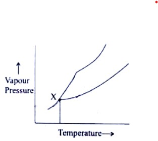
(A) Boiling point of solution
(B) Freezing point of solvent
(C) Boiling point of solvent
(D) Freezing point of solution (Term 1- 2022 Set-1)(Term 1- 2022 Set-2)(Term 1- 2022 Set-3)
Solution- (D) Freezing point of solution
Topic 5: Ideal and Non-Ideal Solutions
1 Marks Questions
Q1- Which of the following formula represents Rault's law for a solution containing non-volatile solute?
(A) ρsolute = ρ0solute . Xsolute
(B) ρ = KH.x
(C) ρTotal = P0solvent
(D) Psolute = P0solvent . Xsolvent (Term 1- 2022 Set-1)(Term 1- 2022 Set-2)(Term 1- 2022 Set-3)
Solution- (B) ρ = KH.x
Q2- An azeotropic solution of two liquids has boiling point lower than either of them when it:
(A) shows no deviation from Raoult's law
(B) shows positive deviation from Raoult's law
(C) is saturated
(D) shows negative deviation from Raoult's law (Term 1- 2022 Set-1)(Term 1- 2022 Set-2)(Term 1- 2022 Set-3)
Solution- (D) shows negative deviation from Raoult's law
2 Marks Questions
Q1- What type of deviation is shown by a mixture of ethanol and acetone ? Give reason.(Outside Delhi Scheme-2014 Set-1)(Outside Delhi Scheme-2014 Set-2)(Outside Delhi Scheme-2014 Set-3)
Solution- A mixture of ethanol and acetone shows positive deviation from Raoult's law.
In positive deviation, the vapor pressure of the solution is higher than predicted by Raoult's law. This occurs because the intermolecular forces between the unlike molecules (ethanol and acetone) are weaker than the forces between like molecules (ethanol-ethanol and acetone-acetone). As a result, more molecules escape from the solution surface, increasing the vapor pressure compared to the ideal behavior predicted by Raoult's law.
Q2- State Raoult’s law for a solution containing volatile components. Write two characteristics of the solution which obeys Raoult’s law at all concentrations. (55/6/1 - 2019)(55/6/2 - 2019)(55/6/3 - 2019)
Solution- According to Raoult's law, the vapour pressure of a solution containing a non-volatile solute is directly proportional to the solvent's mole fraction.
ρsolution = KHxsolution
Examine a binary solution consisting of two liquid components, A and B. Let pA and pB represent the partial pressures of component A and component B, respectively, and let p total represent the total vapour pressure of the solution caused by both components.
ρA = xAρ0A
ρB = xBρ0B
The total vapor pressure of the solution of liquids A and B is then, by Dalton's law of partial pressures, the sum of ρA and ρB.
ρTotal=ρA+ρB
Substituting for ρA and ρB, we get
ρTotal = XAρ0A+ XB + ρ0B
The following attributes of the solution that, at all concentrations, complies with Raoult's law are present:
(i) The enthalpy of mixing (ΔHmix) in a binary solution of components A and B is zero, meaning that no thermal change is seen during the preparation of an ideal solution.
(ii) The volume of mixing (ΔVmix) in an ideal solution is likewise zero, meaning that the total volume of the solution equals the sum of the volumes of the components that are being mixed.
Q3- Differentiate between Ideal solution and Non-ideal solution. (55/6/1- 2023)(55/6/2- 2023)(55/6/3- 2023)
Solution- Ideal Solution:
- Follows Raoult's law at all concentrations and temperatures.
- Shows ideal behavior, meaning there are no interactions between the solute-solute, solvent-solvent, or solute-solvent particles.
- The vapor pressure of each component is directly proportional to its mole fraction in the solution.
- The enthalpy of mixing is zero.
- The heat of vaporization of the components remains constant.
Non-ideal Solution:
- Does not follow Raoult's law at all concentrations and temperatures.
- Shows non-ideal behavior, indicating interactions between the solute-solute, solvent-solvent, or solute-solvent particles.
- The vapor pressure of each component is not directly proportional to its mole fraction in the solution.
- The enthalpy of mixing is not zero.
- The heat of vaporization of the components may change with composition.
Topic 6: Colligative Properties and Determination of Molar Mass
2 Marks Questions
Q1- Define the following terms :
(i) Colligative properties
(ii) Molality (m) (Outside Delhi Scheme-2017 Set-1)(Outside Delhi Scheme-2017 Set-2)(Outside Delhi Scheme-2017 Set-3)
Solution- (i) Colligative properties are properties of solutions that depend only on the number of solute particles present in the solution, not on the identity of the solute particles. Examples include lowering of vapor pressure, elevation of boiling point, depression of freezing point, and osmotic pressure.
(ii) Molality (m) is a measure of the concentration of a solute in a solution, expressed as the number of moles of solute per kilogram of solvent.
Q2- Calculate the freezing point of a solution containing 60 g of glucose (Molar mass = 180 g mol-1) in 250 g of water. (Kf of water = 1·86 K kg mol-1)(Outside Delhi Scheme-2018 Set-1)(Outside Delhi Scheme-2018 Set-2)(Outside Delhi Scheme-2018 Set-3)
Solution-
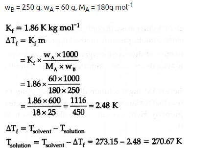
3 Marks Questions
Q1- A solution containing 15 g urea (molar mass = 60 g mol-1) per litre of solution in water has the same osmotic pressure (isotonic) as a solution of glucose (molar mass = 180 g mol-1) in water. Calculate the mass of glucose present in one litre of its solution. (Outside Delhi Scheme-2014 Set-1)(Outside Delhi Scheme-2014 Set-2)(Outside Delhi Scheme-2014 Set-3)
Solution- Given, Mass of urea, WB = 15g
Molar mass of urea, Mb = 60g
The solution of urea is isotonic to that of glucose solution.
So,
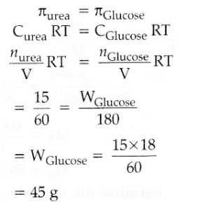
Q2- A 4% solution(w/w) of sucrose (M = 342 g mol-1) in water has a freezing point of 271.15 K. Calculate the freezing point of 5% glucose (M = 180 g mol-1) in water. (Given : Freezing point of pure water = 273.15 K) (55-1-1 - 2019)(55-1-2 - 2019)(55-1-3 - 2019)
Solution-
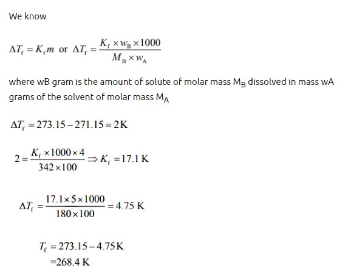
Chapter 2: Electrochemistry
Topic 1: Galvanic Cells
1 Marks Questions
Q1- The correct cell to represent the following reaction is :
Zn + 2Ag+ -> Zn2+ + 2Ag
(a) 2Ag|Ag+ || Zn | Zn2+
(b) Ag+ | Ag || Zn2+
| Zn
(c) Ag|Ag+ || Zn | Zn2+
(d) Zn | Zn2+
|| Ag+ | Ag (55/6/1 - 2023)(55/6/2 - 2023)(55/6/3 - 2023)
Solution- (d) Zn | Zn2+
|| Ag+ | Ag
Q2- ΔG and E0cell for a spontaneous reaction will be:
(a) positive, negative
(b) negative, negative
(c) negative, positive
(d) positive, positive (55/6/1 - 2023)(55/6/2 - 2023)(55/6/3 - 2023)
Solution- (c) negative, positive
Q3- Which of the following is affected by catalyst ?
(a) ΔH
(b) ΔG
(c) Ea
(d) ΔS (55/6/1 - 2023)(55/6/2 - 2023)(55/6/3 - 2023)
Solution- (b) ΔG
5 Marks Questions
Q1- E0cell for the given redox reaction is 2.71 V
Mg(s) + Cu2+(0.01 M) -> Mg2+(0.001 M) + Cu(s)
Calculate Ecell for the reaction. Write the direction of flow of current when an external opposite potential applied is
(i) less than 2.71 V and
(ii) greater than 2.71 V (56-1-1- 2019)(56-1-2- 2019)(56-1-3- 2019)
Solution- According to the Nernst equation
Ecell=E0cell - (2.303RT/nF) log(C2/C1)
Substituting the values,
Ecell = 2.71 - ((2.303x8.314x298)/2x96500)log(0.001/0.01)
Ecell = 2.74 V
(a) The direction of the current flow would not change if an external opposite potential applied was less than 2.71 V.
(b) The direction of current flow would be reversed if an external potential greater than 2.71 V was applied.
Topic 2: Nernst Equation
3 Marks Questions
Q1- Calculate emf of the following cell at 25 °C :
Fe | Fe2+(0.001 M) || H+(0.01 M) | H2(g) (1 bar) | Pt(s)
E°(Fe2+ | Fe) = –0.44 V E°(H+ | H2) = 0.00 V (Delhi Scheme-2015 Set-1)(Delhi Scheme-2015 Set-2)(Delhi Scheme-2015 Set-3)
Solution-
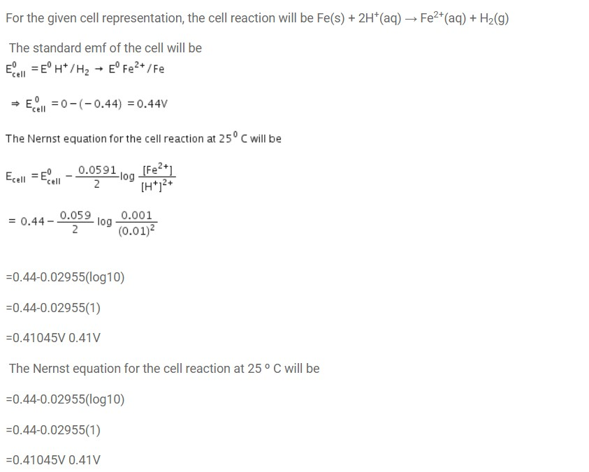
Q2- Calculate e.m.f of the following cell at 298 K :
2Cr(s) + 3Fe2+(0.1M) → 2Cr3+(0.01M) + 3 Fe(s)
Given : E°(Cr3+ | Cr) = – 0.74 V E° (Fe2+ | Fe) = – 0.44 V
Solution-
E°cell= E°cathode - E°anode
E°cell = (-0.44)-(-0.74)V
= 0.30 V

Topic 3: Conductance of Electrolytic Solutions
2 Marks Questions
Q1- (a) Following reactions occur at cathode during the electrolysis of aqueous silver chloride solution :
Ag+(aq) + e- → Ag(s) E° = +0.80 V
H+(aq) + e- →1/2 H2(g) E° = 0.00 V
On the basis of their standard reduction electrode potential (E°) values, which reaction is feasible at the cathode and why ?
(b) Define limiting molar conductivity. Why conductivity of an electrolyte solution decreases with the decrease in concentration ? (Delhi Scheme-2015 Set-1)(Delhi Scheme-2015 Set-2)(Delhi Scheme-2015 Set-3)
Solution-
(a) On the basis of their standard reduction potential (E°) values, cathode reaction is given by the one with higher E° values.
Thus Ag+(aq) + e- → Ag(s) reaction will be more feasible at cathode.
(b) Limiting molar conductivity is the molar conductivity of an electrolyte solution at infinite dilution. It is the molar conductivity value when the electrolyte is completely dissociated into ions and there is no further increase in conductivity with increasing dilution.
The conductivity of an electrolyte solution decreases with the decrease in concentration because as the concentration decreases, the number of ions available to carry the current decreases. This results in a decrease in the overall conductivity of the solution.
Topic 4: Electrolytic Cells and Electrolyis
2 Marks Questions
Q1- Calculate the mass of Ag deposited at cathode when a current of 2 amperes was passed through a solution of AgNO3 for 15 minutes. (Outside Delhi Scheme-2017 Set-1)(Outside Delhi Scheme-2017 Set-2)(Outside Delhi Scheme-2017 Set-3)
Solution- Molar mass of Ag = 108 g /mol
1 F = 96500 c / mol
Reaction at cathode : − Ag+ + e- → Ag (s)
w = ZIT
where, w= mass deposited at cathode
Z= electrochemical constant
I= current
t= time
I = 2amp
t= 15min =15 x 60 = 900s
Z = Eq. wt. substance/96500 = 108/96500
w= (108/96500) x 900 x 2 =2.015g
Topic 5: Batteries
2 Marks Questions
Q1- From the given cells :
Lead storage cell, Mercury cell, Fuel cell and Dry cell
Answer the following :
(i) Which cell is used in hearing aids ?
(ii) Which cell was used in Apollo Space Programme ?
(iii) Which cell is used in automobiles and inverters ?
(iv) Which cell does not have long life ? (Delhi Scheme-2016 Set-1)(Delhi Scheme-2016 Set-2)(Delhi Scheme-2016 Set-3)
Solution- (i) The cell used in hearing aids is the mercury cell. Mercury cells are small in size, have a long shelf life, and provide a stable voltage, making them suitable for devices like hearing aids.
(ii) The cell used in the Apollo Space Programme was the fuel cell. Specifically, the spacecraft used hydrogen-oxygen fuel cells to generate electrical power for various systems.
(iii) The cell used in automobiles and inverters is the lead storage cell, also known as the lead-acid battery. These batteries are known for their ability to provide high surge currents, making them suitable for starting engines in automobiles and providing backup power in inverters.
(iv) The cell that does not have a long life is the dry cell. Dry cells are commonly used in household devices like flashlights and toys. They have a limited lifespan and are not rechargeable.
3 Marks Questions
Q1- (a) Calculate ▲rG0 for the reaction
Mg (s) + Cu2+ (aq) -> Mg2+ (aq) + Cu (s)
Given : E0cell = + 2.71 V, 1 F = 96500 C mol-1
(b) Name the type of cell which was used in Apollo space programme for providing electrical power.(Outside Delhi Scheme-2014 Set-1)(Outside Delhi Scheme-2014 Set-2)(Outside Delhi Scheme-2014 Set-3)
Solution- (a) ▲rG0 = -nFE0cell
Here,n=2
∴▲rG0 = -2 x 96500 x 2.71
= -523030 J
= -523.03 KJ
(b) H2-O2 Fuel cell was used in Apollo space programme for providing electrical power.
Topic 6: Fuel Cells
1 Marks Questions
Q1- Define fuel cell. (Outside Delhi Scheme-2017 Set-1)(Outside Delhi Scheme-2017 Set-2)(Outside Delhi Scheme-2017 Set-3)
Solution- The devices known as fuel cells are those that directly transform the energy released during the combustion of fuels such as hydrogen, methane, methanol, etc. into electrical energy. Take the hydrogen-oxygen fuel cell, for instance.
Chapter 3: Chemical Kinetics
Topic 1: Rate of Reaction and the Factors Influencing it
1 Mark Questions
Q1- Which of the following is affected by catalyst? (55/1/1 2023) (55/1/3 2023)
(a) ΔH
(b) ΔG
(c) Ea
(d) ΔS
Solution- Ea is affected by the catalyst as it lowers it.
2 Marks Questions
Q1- Define rate constant (k). Write the unit of rate constant for the following: (56/2 2015) (56/3 2015)
(i) First order reaction
(ii) Second order reaction
Solution- Rate constant k : The rate constant k is equal to the rate of reaction when the concentration of the reactant is unity. It depends upon the order of reaction as well as temperature.
Units of k:
(i) k for a zero order reaction : mol L-1 s−1
(ii) k for a first order reaction : s-1
3 Marks Questions
Q1- How will the rate of the reaction be affected when: (56/2 2017) (56/1 2017)
(a) surface area of the reactant is increased
(b) temperature of the reaction is decreased
(c) catalyst is added in a reversible reaction ?
Solution- (a) Rate of the reaction Increases when the surface area of the reactant is increased.
(b) Rate of the reaction decreases when the temperature of the reaction is decreased.
(c) Rate of the reaction Increases when catalyst is added in a reversible reaction.
Q2- The rate constant of a first order reaction increases from 2 x 10-2 to 8 x 10-2 when the temperature changes from 300 K to 320 K. Calculate the energy of activation. (56/1 2016) (56/2 2016)
Solution-
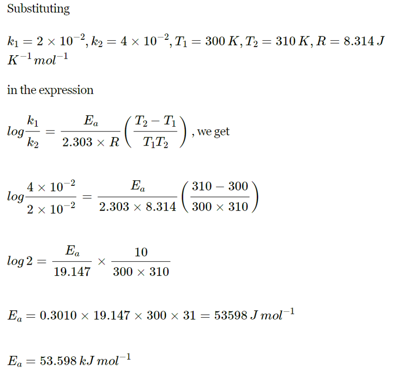
Q3- The following data were obtained during the first order thermal decomposition of SO2Cl2 at a constant volume. Calculate the rate constant. (56/2 2014) (56/3 2014)
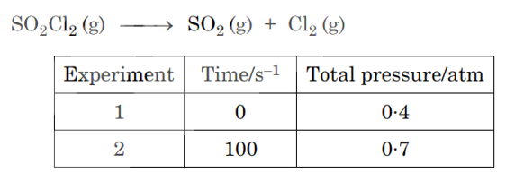
Solution-
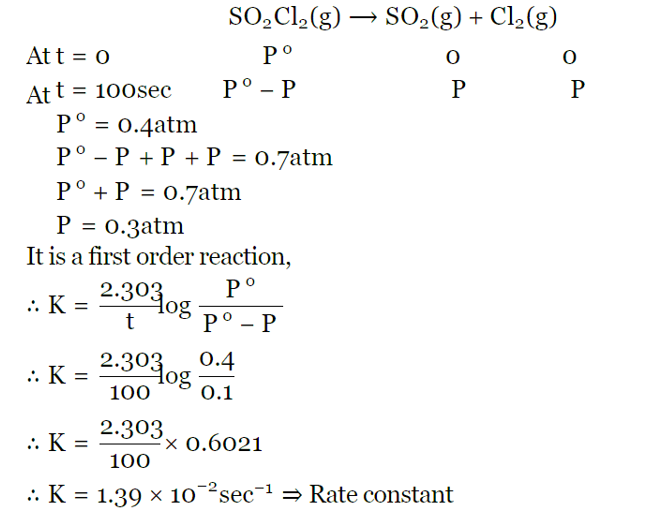
4 Marks Questions
Q1- The rate of reaction is concerned with decrease in concentration of reactants or increase in the concentration of products per unit time. It can be expressed as instantaneous rate at a particular instant of time and average rate over a large interval of time. Mathematical representation of rate of reaction is given by rate law. Rate Constant and order of a reaction can be determined from rate law or its integrated rate equation. (55/1/2 2023) (55/1/3 2023)
(i) What is average rate of reaction ?
(ii) Write two factors that affect the rate of reaction.
(iii) (1) What happens to rate of reaction for zero order reaction ?
(2) What is the unit of k for zero order reaction ?
Solution- (i) It is defined as the change in the concentration of a product or reactant per unit time.
(ii) Factors affecting rate of reaction:
(1) Concentration of reactants : Rate of reaction increases on increasing the concentration of reactants.
(2) Temperature of reactants : Rate of reaction increases on increasing the temperature. For a 410 Celsius rise in temperature rate of reaction generally becomes double.
(3) Nature of reactants.
(4) Presence of catalysts.
(5) Surface area of reactants.
(6) Effect of radiation.
(iii) (1) Rate is independent of the concentration of reactant(s) so, it remains constant.
(2) mol L–1 s –1
Topic 2: Integrated Rate Equations
2 Marks Questions
Q1- (i) For a reaction P + 2Q Products Rate = k[P]0.5 [Q]1. What is the order of the reaction ?
(ii) Define pseudo first order reaction with an example. (55/1 2022) (55/2 2022)
Solution- (i) Order of reaction is the sum of stoichiometric coefficients of the reactants. So, according to the question, 0.5 + 1 = 1.5.
(ii) A reaction that appears to be of higher order but follows first-order kinetics is called a pseudo first order reaction. Example: Hydrolysis of an ester.
Q2- Analyse the given graph, drawn between concentration of reactant vs. time. (56/1/2 2020) (56/1/3 2020)
(a) Predict the order of reaction.
(b) Theoretically, can the concentration of the reactant reduce to zero after infinite time ? Explain.
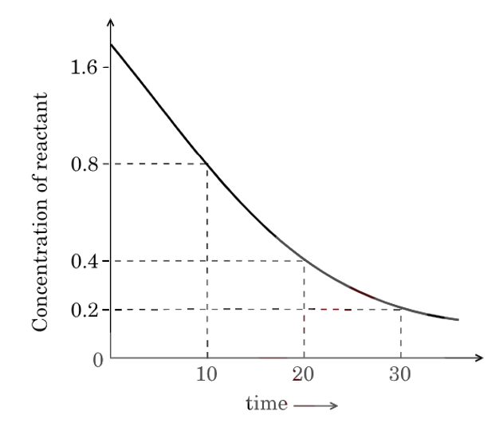
Solution- (a) Given graph is of 1st order reaction.
(b) No, due to exponential relation, the curve never touches the x-axis. Hence, it does not become zero.
Q3- For a chemical reaction R -> P, the variation in the concentration (R) vs. time (t) plot is given below: (56/1 2013) (56/ 2 2013)
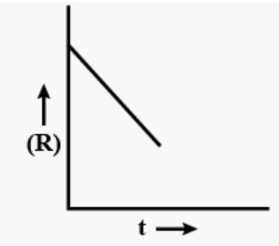
(i) Predict the order of the reaction.
(ii) What is the slope of the curve ?
Solution- (i) The variation in the concentration (R) vs. time (t) plot shown here represents a zero order reaction, for which the rate of the reaction is proportional to zero power of the concentration of the reactants.
(ii) For a zero order reaction, rate constant is given as
[R]=[R]o−kt
So, the slope of the curve for the variation in the concentration (R) vs. time (t) plot is equal to the negative of the rate constant for the reaction.
3 Marks Questions
Q1- The decomposition of NH3 on platinum surface is zero order reaction. If rate constant (k) is 4 x 10–3 Ms–1, how long will it take to reduce the initial concentration of NH3 from 0.1 M to 0.064 M. (56/1/2 2019) (56/1/3 2019)
Solution-
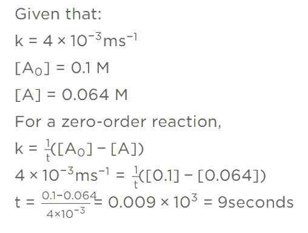
Topic 3: Collision Theory of Chemical Reactions
2 Marks Questions
Q1- Assertion (A) : The molecularity of the reaction H2 + Br22HBr appears to be 2.
Reason (R) : Two molecules of the reactants are involved in the given elementary reaction. (55/1 2022) (55/3 2022) (56/1/2 2020)
Solution- Both A and R are true but R is not correct explanation of A.
Molecularity of reaction is the no. of molecules acting in the rate determining step while order of reaction is the total of all powers to which concentration are raised in the rate law expression. So, both may or may not be same.
Chapter 4: The d-and f-Block Elements
Topic 1: General Properties of the Transition Elements (d-Block)
1 Mark Questions
Q1- Out of the following transition elements, the maximum number of oxidation states are shown by: (55/2/1 2020) (55/2/2 2020)
(A) Sc (Z = 21)
(B) Cr (Z = 24)
(C) Mn (Z = 25)
(D) Fe (Z = 26)
Solution- (C)
Manganese shows maximum number of oxidation states because it has 5 unpaired electrons in 3d and also contains 2 electrons in 4s-subshell.Hence, oxidation states shown by Mn are +2, +3, +4, +5, +6, +7.
Q2- Copper atom has fully filled d-orbitals in its ground state but it is a transition element. Why? (56/1 2016) (56/3 2016)
Solution- Copper atom has completely filled d orbitals (3d10) in its ground state, yet it is regarded as a transition element due to incompletely filled d-orbital in its ionic states i.e. Cu2+ (3d9s).
2 Marks Questions
Q1- Give reason and select one atom/ion which will exhibit asked property : (56/2 2018) (56/3 2018)
(i) Sc3+ or Cr3+ (Exhibit diamagnetic behaviour)
(ii) Cr or Cu (High melting and boiling point)
Solution- (i) Sc3+ exhibit diamagnetic behaviour, because of absence of unpaired electron.
(ii) Cr has High melting and boiling point, because of presence of strong intermetallic bonding than Cu.
3 Marks Questions
Q1- Account for the following: (56/3 2016) (56/2 2016)
(i) Ce4+ is a strong oxidizing agent in aqueous solution.
(ii) Transition metals have high enthalpy of atomization
(iii) Mn shows maximum number of oxidation states in 3d series
Solution- (i) In aqueous solutions Ce4+ tends to change to Ce3+ as +3 oxidation state is more stable. Therefore, Ce4+ acts as an oxidising agent.
(ii) Transition metals have a large number of unpaired electrons in their atoms. They form strong metallic bonds and therefore have a high enthalpy of atomisation.
(iii) Mn has the electronic configuration : 3d5 4s2. Hence, it shows oxidation states from +2 to +7 as it has maximum number of unpaired electrons.
Q2- Account for the following: (56/1 2015) (56/3 2015)
(i) Transition metals form coloured compounds.
(ii) Cr2+ is a strong reducing agent.
(iii) Actinoids show irregularities in their electronic configurations.
Solution- (i) Colour of transistion metal - compounds is due to the excitation of an electron from a lower energy d-orbital to a higher energy d orbital. The energy of excitation corresponds to the frequency of light absorbed and the colour observed corresponds to the complementary color of the light absorbed (whose frequency lies on the visible region).
(ii) Cr2+ is a strong reducing agent because after the loss of one electron it becomes Cr3+ which has more stable t32g (half-filled) configuration.
(iii) The irregularities in the electronic configurations of the actinoids are related to the stabilities of the f0, f7 and f14 occupancies of the 5f orbitals.
Q3- (i) With reference to structural variability and chemical reactivity, write the differences between lanthanoids and actinoids.
(ii) Name a member of the lanthanoid series which is well known to exhibit +4 oxidation state. (56/2 2014) (56/3 2014)
Solution- (i) The difference between lanthanoids and actinoids with respect to their structural variability and chemical reactivity are as follows:
a) Actinoids are radioactive, while lanthanoids are not radioactive.
b) The ionisation enthalpies of the early actinoids are lower than those of the early lanthanoids. Actinoids show the oxidation state from +3 (most common) to +7, while lanthanoids show the oxidation state from +3 up to +7.
c) Actinoids are more reactive and have more complex magnetic properties than lanthanoids.
(ii) Cerium is a lanthanoids element that is known to exhibit the oxidation state of +4.
5 Mark Questions
Q1- (a) Account for the following : (56/2 2018) (56/3 2018)
(i) Copper (I) compounds are white whereas Copper (II) compounds are coloured.
(ii) Chromates change their colour when kept in an acidic solution.
(iii) Zn, Cd, Hg are considered as d-block elements but not as transition elements.
(b) Calculate the spin-only moment of Co2+ (Z = 27) by writing the electronic configuration of Co and Co2+.
Solution- (a) (i) Copper (I) compounds are white whereas Copper (II) compounds are colored because, in Cu+1(3d10)Cu+1 (3d10) there is absence of unpaired electrons while in Cu+2(3d9)Cu+2,/sup. 3d9 compounds are colored due to unpaired e- shows d-d transition.
(ii) Chromate changes to dichromate ion in acidic medium, hence color is changed.
(iii) Due to completely filled d-orbitals in their ground state as well as in oxidized state, Zn, Cd, Hg are considered as d-block elements but not as transition elements.
(b)
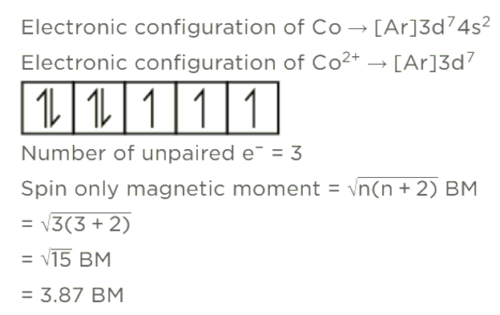
Q2- (a) Complete the following equations : (56/1 2013) (56/3 2013)
(i) [Cr2O7]2−+2OH− ->
(ii) MnO4−+4H++3e− ->
(b) Account for the following:
(i) Zn is not considered as a transition element.
(ii) Transition metals form a large number of complexes.
(iii) The Eovalue for the Mn3+/Mn2+ couple is much more positive than that for Cr3+/Cr2+ couple.
Solution-
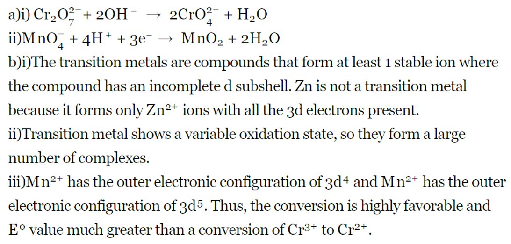
Topic 2: The Lanthanoids
1 Mark Questions
Q1- Lanthanoid contraction is due to increase in : (55/1/1 2022 Term 1) (55/1/3 2022 Term 1)
(a) atomic number
(b) shielding by 4f electrons
(c) effective nuclear charge
(d) atomic radius
Solution- (C)
The lanthanoid contraction refers to the fact that the 5s and 5p orbitals penetrate the 4f sub-shell so the 4f orbital is not shielded from the increasing nuclear change, which causes the atomic radius of the atom to decrease.
Q2- The most common and stable oxidation state of a Lanthanoid is : (55/1/2 2023)
(a) +2
(b) +3
(c) +4
(d) +6
Solution- (B)
2 Marks Questions
Q1- Define lanthanoid contraction. Write the common oxidation state of lanthanoids. (56/1 2015) (56/3 2015)
Solution- The overall decrease in atomic and ionic radii from lanthanum to lutetium, due to poor shielding effect of 4f electrons is called lanthanoid contraction.
The common oxidation state fo lanthanoids is +3.
3 Marks Questions
Q1-Give three points of difference between lanthanoids and actinoids. (56/1 2018) (56/2 2018)
Solution- (i) In the case of Lanthanoide, progressive filling of 4f-orbital takes place while 5f-orbital is progressively filled in the case of actinoids.
(ii) Except for Promethium, lanthanoid elements are non-radioactive in nature, whereas all actinoid series members are radioactive.
(iii) Lanthanoids are less reactive as compared to actinoids.
(iv) The magnetic property of Lanthanoids is less complex as compared to actinoids.
Topic 3: The Actinoids
1 Mark Questions
Q1- The chemistry of actinoids elements is not so smooth as that of the lanthanoids. Why? (56/3 2017) (56/2 2017)
Solution- Lanthanoids display a limited number of oxidation states because the energy difference between 4f, 5d, and 6s orbitals is quite large. On the other hand, the energy difference between 5f, 6d, and 7s orbitals is very less. Hence, actinoids display a larger number of oxidation states.
Chapter 5: Coordination Compounds
Topic 1: Werner’s Theory of Coordination Compounds
4 Marks
Q1- Coordination compounds are widely present in the minerals, plant and animal worlds and are known to play many important functions in the area of analytical chemistry, metallurgy, biological systems and medicine.Alfred Werner's postulated the use of two types of linkages (primary and secondary), by a metal atom/ion in a coordination compound. He predicted the geometrical shapes of a large number of coordination entities using the property of isomerism. The Valence Bond Theory (VBT) explains the formation, magnetic behaviour and geometrical shapes of coordination compounds. It, however, fails to describe the optical properties of these compounds. The Crystal Field Theory (CFT) explains the effect of different crystal fields (provided by the ligands taken as point charges) on the degeneracy of d-orbital energies of the central metal atom/ion.
Answer the following questions : (56/3/1, 2023)(56/3/3, 2023)
(i) When a coordination compound NiCl2 . 6H2O is mixed with AgNO3 solution, 2 moles of AgCl are precipitated per mole of the compound. Write the structural formula of the complex and secondary valency for Nickel ion.
(ii) Write the IUPAC name of the ionisation isomer of [Co(NH3)5(SO4)]Cl.
(iii) Using Valence Bond Theory, predict the geometry and magnetic nature of :
(1) [Ni(CO)4]
(2) [Fe(CN)6]3-
[Atomic number : Ni = 28, Fe = 26]
Solurion- (i) [Ni(H2O)6]Cl2,
(ii) Pentaamminechloridocobalt(III)sulphate
(iii)
(1) [Ni(CO)4] – tetrahedral, diamagnetic
(2) [Fe(CN)6] 3– - octahedral, paramagnetic
Topic 2: Definitions of Some Important Terms Pertaining to Coordination Compounds
1 Mark
Q1- Write the coordination number and oxidation state of Platinum in the complex [Pt(en)2Cl2]. (56/1, 2018)(56/2, 2018)(56/3/2018)
Solution- Coordination Number = 6 , Oxidation State = +2
Topic 3: Nomenclature of Coordination Compounds
Q1- (i) Write the IUPAC name of the complex [Cr(NH3)4 Cl2]Cl.
(iii) Why is [NiCl4]2– paramagnetic but [Ni(CO)4] is diamagnetic ? (56/1, 2014)(56/2, 2014)(56/3, 2014)
(At. nos. : Cr = 24, Co = 27, Ni = 28)
Solution-
(i) The IUPAC name of the complex[Cr(NH3)4Cl2]Cl is Tetraamminedichlorochromium(III) chloride.
(iii) In [NiCl4]2−, the oxidation state of Ni is +2. Chloride is a weak field ligand and does not cause pairing up of electrons
against the Hund's rule of maximum multiplicity. As a result, two unpaired electrons are present in the valence
d-orbitals of Ni which impart paramagnetic character to the complex. On the other hand, carbonyl is a strong field ligand
and causes pairing up of electrons against the Hund's rule of maximum multiplicity. As a result, no unpaired electrons
are present and hence, the complex is diamagnetic.
.png)
2 Marks
Q1- Write IUPAC name of the complex [Pt(en)2Cl2]. Draw structures of geometrical isomers for this complex.
Solution- Bis(ethan-1,2-diamine)dichloridoplatinum (II)(56/1/1, 2019)(56/1/2, 2019)(56/1/3, 2019)

Q2- Using IUPAC norms write the formulae for the following :
(i) Hexaamminecobalt(III) sulphate
(ii) Potassium trioxalatochromate(III)(56/1/1, 2019)(56/1/2, 2019)(56/1/3, 2019)
Solution- i) [Co(NH3)6]2(SO4)3
ii) K3[Cr(ox)3]
Q3- Write IUPAC name of the complex [Co(en)2(NO2)Cl]+. What type of structural isomerism is shown by this complex ? (56/1/2, 2019)(56/1/3, 2019)
Solution-
Chloridobis(ethane-1,2-diamine)nitrito-N-cobalt(III) ion
Linkage isomerism
Q4- Using IUPAC norms, write the formulae for the following complexes : (56/1/2, 2019)(56/13, 2019)
(a) Hexaaquachromium(III) chloride
(b) Sodium trioxalatoferrate(III)
Solution- i) [Cr(H₂O)₆]Cl₃
ii) Na₃[Fe(ox)₃]
Q5-
(a)Write the IUPAC name and hybridisation of the complex [CoF6]3-. (56/3/1, 2020)(56/3/2, 2020)
(Given : Atomic number of Co = 27)
(b)What type of isomerism is shown by the complex [Co(en)2 Cl2]2+ ?
(c)Name the structure of an isomer of this complex which is optically active.
Solution-
a) Hexafluoridocobaltate(III) sp3d2
b) Isomerism – Geometrical / optical cis isomer is optically active
3 Marks
Q1-
(a) Write the hybridization and shape of the following complexes :
(i) [Co(NH3)6]3+
(ii) [NiCl4]2-
(Atomic number : Co = 27, Ni = 28)
(b) Out of NH3 and ‘en’, which ligand forms more stable complex with metal and why ? (56/1/MT, 2015)(56/2/MT, 2015)(56/3/MT, 2015)
Solution-
(a)
(i)
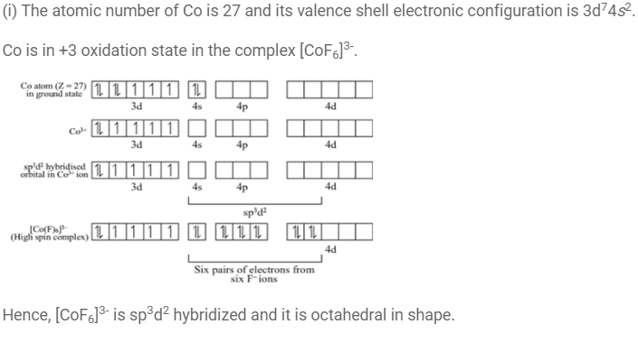
(ii)
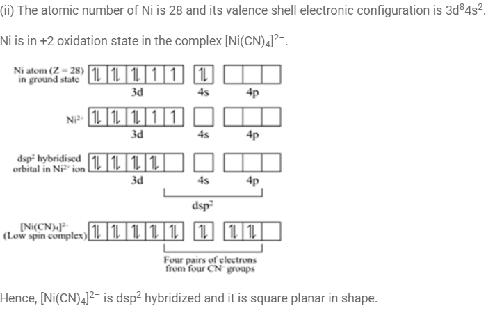
(b)
Q2- (a) Give the IUPAC name and electronic configuration of central metal atom in terms of t2g and eg of K4[Mn(CN)6].(56/2/1, 2020)(56/2/2, 2020)
(b) What is meant by ‘Chelate effect’ ? Give an example.
Solution- (a)
Potassiumhexacyanidomanganate(II) / Potassiumhexacyanomanganate(II)
t2g5 eg0
(b) Increased stability of the complex due to presence of chelating or didentate or polydentate ligands.
e.g.[Cr(en)3]3+
Q3- Write the hybridisation and magnetic characters of the following complexes : (56/2/1, 2020)(56/2/3, 2020)
(i) [Fe(CN)6]4–
(ii) [CoF6]3–
(iii) [Ni(CO)4]
Solution- (i) d2sp3,diamagnetic
(ii) sp3d2, paramagnetic
(iii) sp3, diamagnetic
Topic 4: Isomerism in Coordination Compounds
1 Mark
Q1- (ii) What type of isomerism is exhibited by the complex [Co(en)3]3+ ?
(en = ethane-1,2-diamine) (56/1, 2014)(56/2, 2014)(56/3, 2014)
Solution- The complex [Co(en)3]3+ exhibits optical isomerism. Its optical isomers are shown in the image.
Q2- What type of isomerism is shown by the complex [Co(NH3)5 NO2] Cl2 ?(56/2/1, 2020)(56/2/2, 2020)(56/2/2, 2020)
Solution- Linkage Isomerism
Q3- The compounds [Co(SO4) (NH3)5] Br and [Co(Br) (NH3)5] SO4 represent : (56/1/1, 2023)
(a) optical isomerism (b) linkage isomerism
(c) ionisation isomerism (d) coordination isomerism
Solution- (c) ionisation isomerism
2 Marks
Q1- Write down the IUPAC name of the complex [Co(NH3)5(CO3)]Cl. What type of isomerism is shown by this complex ? (56/1/MT, 2015)(56/2/MT, 2015)
Solution- IUPAC Name: Pentaaminecarbonatocobalt(III) chloride. The above complex shows Linkage isomerism and the linkage isomer is
Q2- Using IUPAC norms write the formulae for the following coordination compounds :(56/1/MT, 2015)(56/2/MT, 2015)
(i) Tetrachloridocuprate(II)
(ii) Potassium tetrahydroxozincate(II)
Solution:
(i) K2CuCl4 also written as (K+2·[CuCl4]2-
(ii) Zn(OH)2-
Q3- Out of [CoF6]3– and [Co(en)3]3+, which one complex is (56/1/1, 2019)(56/1/2, 2019)(56/1/3, 2019)
(i) paramagnetic
(ii) more stable
(iii) inner orbital complex and
(iv) high spin complex
(Atomic no. of Co = 27)
Solution-
i) [CoF6]3-
ii)[Co(en)3]3+
iii) [Co(en)3]3+
iv) [CoF6]3-
Q4- Assertion(A): Linkage isomerism arises in coordination compounds because of ambidentate ligand.
Reason (R) : Ambidentate ligand like NO2 has two different donor atoms i.e., N and O. (56/1/1, 2020)(56/1/3, 2020)
Solution- Both Assertion (A) and Reason (R) are correct statements, and Reason (R) is the correct explanation of the Assertion (A).
Q5- Write the IUPAC names of the following : (56/2/1, 2023)
(i) [Co(NH3)5(ONO)]2+
(ii) K2[NiCl4]
Solution-
(i) Pentaamminenitrito-O-cobalt(III) ion
(ii) Potassium tetrachloridonickelate(II)
Q6-
(i)What is a chelate complex ? Give one example.
(ii) What are heteroleptic complexes ? Give one example. (56/2/1, 2023)
Solution-
(i) • A complex formed by a didentate or a polydentate ligand.
• [Co(ox)3]3- (or any other suitable example)
(ii) • Complexes in which a metal is bound to more than one kind of donor groups or ligands.
• [Co (NH3)4Cℓ2]+ (or any other suitable example)
3 Marks
Q1- Using IUPAC norms write the formulae for the following :
(a) Sodium dicyanidoaurate(I)
(b) Tetraamminechloridonitrito-N-platinum(IV) sulphate (56/1/1, 2017)
Solution-
(a) Na[Au(CN)2
(b) [Pt(NH3)4Cl(NO2)]SO4
Q3-
(a) What type of isomerism is shown by the complex [Co(NH3)5 (SCN)]2+ ?
(b) Why is [NiCl4]2- paramagnetic while [Ni(CN)4]2- is diamagnetic ? (Atomic number of Ni = 28)
(c) Why are low spin tetrahedral complexes rarely observed ?(56/1/1, 2017)(56/1/2, 2017)(56/1/3, 2017)
Solution-
(a) Linkage isomerism is shown by the complex.
(b) Cl-is a weak field ligand so it cannot pair up the electron while CN-is a strong field ligand that can pair up the electrons.
(c) The strong field ligands cause pairing of electrons and in most cases make the last d-orbital empty and thus tetrahedral complex is not formed.
Q4-
(a) Write the formula of the following coordination compound :
Iron(III) hexacyanoferrate(II)
(b) What type of isomerism is exhibited by the complex [Co(NH3)5Cl]SO4 ?
(c) Write the hybridisation and number of unpaired electrons in the complex [CoF6]3–. (Atomic No. of Co = 27) (56/1, 2018)56/2, 2018)(56/3, 2018)
Solution-
(a) Fe4[Fe (CN)6]3
(b) Ionisation isomerism
(c) sp3d2, 4
Q5-
(i) Write the IUPAC name of the following complex : (56/2/1, 2022)(56/2/2, 2022)
[Co(NH3)4(H2O)Cl]Cl2
(ii) What is the difference between an Ambidentate ligand and aBidentate ligand ?
(iii) Out of [Fe(NH3)6]3+ and [Fe(C2O4)3]3 , which complex ismore stable and why ?
Solution-
(i) Tetraammineaquachloridocobalt (III) chloride
(ii) Ambidentate ligand is a ligand which has two different donor atomsand either of the two ligates with metal atom or ion in the complex whereaswhen a ligand ligates through two donor atoms is called a bidentate ligand.
(iii)Fe[C2O3]3-, due to chelate effect / due to cyclic structure.
Topic 5: Importance and Applications of Coordination Compounds
1 Mark
Q1- The oxidation state of Fe in [Fe(CO)5] is
(a) + 2 (b) 0
(c) + 3 (d) + 5
Solution- (b) 0
Q2- Which of the following is the most stable complex species ? (56/3/2, 2023)
(a) [Fe(C2O4)3]3-
(b) [Fe(CN)6]3-
(c) [Fe(CO)5]
(d) [Fe(H2O)6]3+
Solution- (a) [Fe(C2O4)3]3-
2 Marks
Q1-
(a) Although both [NiCl4]2– and [Ni(CO)4] have sp3 hybridisation yet [NiCl4]2– is paramagnetic and [Ni(CO)4] is diamagnetic. Give reason. (Atomic no. of Ni = 28) (56/2/1, 2019)(56/2/2, 2019)(56/2/3, 2019)
(b) Write the electronic configuration of d5 on the basis of crystal field theory when
(i) △o < P
(ii) △o> P
Solution-
a) In [NiCl4]2-, Cl- is a weak field ligand due to which there are two unpaired electrons in 3d orbital whereas in [Ni(CN)4]2-, CN- is a strong field ligand due to which pairing leads to no unpaired electron in 3d- orbital Or structural representation
b)
i) t2g3eg2
ii) t2g5eg0
2 Marks
Q1- Write the hybridization and magnetic behaviour of [Ni(CN)4]2 [Atomic number : Ni = 28] (56/2/3, 2019)
Solution- dsp2, diamagnetic
3 Marks
Q1- (b) When a co-ordination compound NiCl2.6H2O mixed with AgNO3, 2 moles of AgCl are precipitated per mole of the compound. Write (56/1/1, 2022)(56/1/2, 2022)(56/1/3, 2022)
(i) Structural formula of the complex.
(ii) Secondary valency of 'Ni' in the complex.
(iii) IUPAC name of the complex.
Solution-
(i) t33e1g
(ii) dsp2 , diamagnetic
(iii) [CoCl2(en)2]+
Q2- (a) Draw the geometrical isomers of [Co(en)2Cl2]2+. Which geometrical isomer of [Co(en)2Cl2]2+ is not optically active and why ?(56/2/1, 2023)
(b) Write the hybridisation and magnetic behaviour of [CoF6]3–. [Given : Atomic number of Co = 27]
Solution- (a)
(b) sp3d2 , paramagnetic.
Chapter 6: Haloalkanes and Haloarenes
Topic 1: Classification
Topic 2: Nomenclature
1 Mark
Q1- Write the IUPAC name of the following compound :
H3C - C = C - CH2 - OH
| |
CH3 Br
(56/1/1, 2017)(56/1/2, 2017)(56/1/3, 2017)
Solution- 2-bromo-3-methylbut-2-en-1-ol.
Q2- Racemisation occurs in (56/3/1, 2020)
(A) SN2 reaction
(B) SN1 reaction
(C) Neither SN2 nor SN1 reactions
(D) SN2 reaction as well as SN1 reaction
Solution- (B) SN1 reaction
3 Marks
Q1- The following compounds are given to you : 2-Bromopentane, 2-Bromo-2-methylbutane, 1-Bromopentane
(a) Write the compound which is most reactive towards SN2 reaction.
(b) Write the compound which is optically active.
(c) Write the compound which is most reactive towards -elimination reaction.(56/1/1, 2017)(56/1/2, 2017)(56/1/3, 2017)
Solution-
(a) 1-Bromopentane will be most reactive towards SN2 as it is least hindered.Primary alkyl halides are most reactive for SN2 reaction.
(b) 2-Bromopentane (Figure B) has a chiral carbon in it. So this compound is optically active.
(c) 2-Bromo-2-methyl pentane will give a stable elimination product. (Most stable alkene i. e. more substituted)
Topic 3: Nature of C–X Bond
1 Mark Questions
Q1- Which would undergo SN2 reaction faster in the following pair :
CH3
|
CH3-CH2-Br and CH3-C-CH3
|
Br
(56/1/MT, 2015)(56/2/MT, 2015)(56/3/MT, 2015)
Solution- Primary alkyl halides undergo SN2 reactions faster than tertiary alkyl halides.
2 Marks Questions
3 Marks Questions
Q1- Justify and arrange the following compounds of each set in increasing order of reactivity towards the asked displacement :
(a) 1-Bromobutane, 2-Bromobutane, 2-Bromo-2-Methylpropane
(SN1 reaction)
(b)1-Bromobutane, 2-Bromobutane, 2-Bromo-2-Methylpropane
(SN2 reaction) (56/2/1, 2020)(56/2/2, 2020)
Solution- (a) 1-bromobutane < 2-bromobutane < 2-bromo-2-methylpropane. Tertiary carbo cation is more stable than secondary than primary.
(b) 2-bromo-2-methyl propane < 2-bromobutane< 1-bromobutane, due to decrease in steric hindrance.
5 Marks Questions
Topic 4: Methods of Preparation of Haloalkanes
Q1- Write the mechanism of the following reaction :
CH3CH2OH + HBr −−−→ CH3CH2Br+H2O (56/1, 2014))(56/2, 2014)(56/3, 2014)
Solution- CH3CH2OH + H−Br→CH3CH2Br+H2O
MECHANISM:
1) The lone pair on oxygen attacks the H-Br molecule forming a hydronium ion.
2) Formation of carbocation.
3) Attack of Nucleophile Br−.
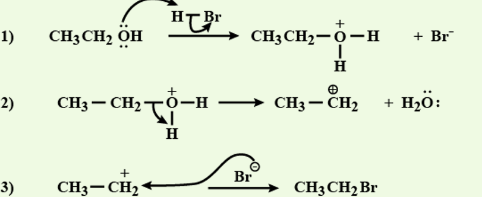
Topic 5: Preparation of Haloarenes
Q1-
(a) Draw the structures of major monohalo products in each of the following reactions :
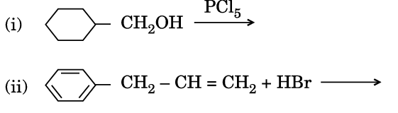
(b) Which halogen compound in each of the following pairs will react faster in SN2 reaction :
(i) CH3Br or CH3I
(ii) (CH3)3C – Cl or CH3 – Cl (56/1, 2014))(56/2, 2014)(56/3, 2014)
Solution-
(a) 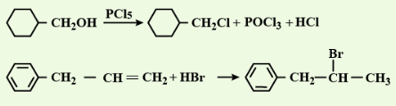
(b)
(i) CH3I will react faster in SN2 reaction than CH3Br. This is because I− is a better leaving group, owing to its greater size than Br−.
As a result, it will leave at a faster rate in the presence of an incoming nucleophile.
(ii) CH3Cl will react faster in SN2 reaction than (CH3)3−Cl, as CH3−Cl is a primary halide whereas (CH3)3C−Cl is a tertiary halide.
Primary halides undergo SN2 reactions faster.
Topic 6: Physical Properties
1 Mark
Q1- Define ambidient nucleophile with an example. (56/1/1, 2017)(56/1/2, 2017)(56/1/3, 2017)
Solution- Nucleophiles having two nucleophilic centres. CN- /SCN- / NO2- (any one)
Topic 7: Chemical Reactions
1 Mark
Q1- Write the structure of the alkene formed by dehydrohalogenation of 1-bromo-1-methylcyclohexane with alcoholic KOH. (56/1, 2018)(56/2, 2018)
Solution- 
3 Marks
Q1- (a) Which isomer of C5H10 gives a single monochloro compound C5H9Cl in bright sunlight ? (56/2/1, 2023)(56/2/3, 2023)
(b) Arrange the following compounds in increasing order of reactivity towards SN2 reaction :
2-Bromopentane, 1-Bromopentane, 2-Bromo-2-methylbutane
(c) Why p-dichlorobenzene has higher melting point than those of ortho and meta-isomers ?
Solution- (a) Cyclopentane
(b) 2-Bromo-2-methylbutane < 2-Bromopentane < 1-Bromopentane
(c) Because para isomer fits well into the crystal lattice due to symmetry.
Topic 8: Polyhalogen Compounds
1 Mark
Q1- The synthesis of alkyl fluoride is best obtained from : (56/1/1, 2023)
(a) Free radicals (b) Swartz reaction
(c) Sandmeyer reaction (d) Finkelstein reaction
Solution- (b) Swartz reaction
Q2- Assertion (A) : Nucleophilic substitution of iodoethane is easier than chloroethane.
Reason (R) : Bond enthalpy of C-I bond is less than that of C-Cl bond.
Solution- Both (A) and (R) are true and (R) is the correct explanation of (A).
3 Marks
Q1- Among all the isomers of molecular formula C4H9Br, identify (56/2/1, 2019)(56/2/2, 2019)(56/2/3, 2019)
(a) the one isomer which is optically active.
(b) the one isomer which is highly reactive towards SN2.
(c)the two isomers which give same product on dehydrohalogenation with alcoholic KOH.
Solution- (a) 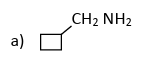
(b) 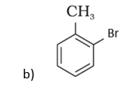
(c) 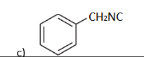
Chapter 7: Alcohols, Phenols and Ethers
Topic 1: Classification
3 Marks Questions
Q1-Explain the classification of alcohols, phenols, and ethers based on their functional groups and provide examples for each class.
Solution- Alcohols:
Alcohols are organic compounds that contain a hydroxyl (-OH) functional group attached to a carbon atom. They can be classified based on the type of carbon atom to which the hydroxyl group is attached:
Primary Alcohols: Primary alcohols have the hydroxyl group attached to a carbon atom that is bonded to only one other carbon atom.
Example: Ethanol (CH₃CH₂OH)
Secondary Alcohols: Secondary alcohols have the hydroxyl group attached to a carbon atom that is bonded to two other carbon atoms.
Example: Isopropanol (CH₃CHOHCH₃)
Tertiary Alcohols: Tertiary alcohols have the hydroxyl group attached to a carbon atom that is bonded to three other carbon atoms.
Example: Tert-butanol (CH₃)₃COH
Phenols:
Phenols are aromatic compounds that contain a hydroxyl (-OH) group directly attached to a benzene ring. They can be classified based on the substitution pattern on the benzene ring:
Mono-substituted Phenols: Mono-substituted phenols have only one substituent (other than the hydroxyl group) attached to the benzene ring.
Example: Phenol (C₆H₅OH)
Di-substituted Phenols: Di-substituted phenols have two substituents attached to the benzene ring.
Example: 2,4-Dimethylphenol (CH₃)₂C₆H₃OH
Ethers:
Ethers are organic compounds that contain an oxygen atom bonded to two alkyl or aryl groups. They can be classified based on the nature of the groups attached to the oxygen atom:
Symmetrical Ethers: Symmetrical ethers have identical alkyl or aryl groups attached to the oxygen atom.
Example: Dimethyl ether (CH₃OCH₃)
Unsymmetrical Ethers: Unsymmetrical ethers have different alkyl or aryl groups attached to the oxygen atom.
Example: Methyl ethyl ether (CH₃OCH₂CH₃)
Understanding the classification of alcohols, phenols, and ethers based on their functional groups and structural features is important for identifying and naming these organic compounds in chemical reactions and synthesis pathways.
5 Mark Questions
Q1-Explain the classification of alcohols, phenols, and ethers. Discuss the structural features, functional groups, and properties of each class of compounds. Provide examples to illustrate the differences between them and their importance in various industrial and biological processes.(2018)
Solution-Classification of Alcohols, Phenols, and Ethers:
Alcohols: Alcohols are organic compounds containing a hydroxyl (-OH) functional group attached to a carbon atom. They are classified based on the number of carbon atoms bonded directly to the carbon atom bearing the hydroxyl group.
Primary alcohols: Have one carbon atom directly bonded to the carbon bearing the hydroxyl group (R-CH2OH).
Secondary alcohols: Have two carbon atoms directly bonded to the carbon bearing the hydroxyl group (R2-CHOH).
Tertiary alcohols: Have three carbon atoms directly bonded to the carbon bearing the hydroxyl group (R3-COH).
Phenols: Phenols are aromatic compounds containing a hydroxyl group (-OH) directly attached to a benzene ring. They are characterized by their acidic properties due to the resonance stabilization of the phenoxide ion formed upon deprotonation of the hydroxyl group.
Ethers: Ethers are organic compounds containing an oxygen atom bonded to two alkyl or aryl groups. They are classified based on the nature of the groups attached to the oxygen atom.
Symmetrical ethers: Have identical alkyl or aryl groups on both sides of the oxygen atom (R-O-R).
Unsymmetrical ethers: Have different alkyl or aryl groups on either side of the oxygen atom (R1-O-R2)
.
Structural Features and Properties:
Alcohols: Alcohols exhibit polar characteristics due to the presence of the hydroxyl group. They can form hydrogen bonds with water molecules, making them soluble in water. Alcohols undergo various chemical reactions, including oxidation, dehydration, and substitution reactions.
Example: Methanol (CH3OH), ethanol (C2H5OH), propanol (C3H7OH).
Phenols: Phenols are acidic due to the ability of the hydroxyl group to donate a proton. They are less soluble in water compared to alcohols but are soluble in organic solvents. Phenols undergo electrophilic aromatic substitution reactions and can act as antioxidants and disinfectants.
Example: Phenol (C6H5OH), cresol.
Ethers: Ethers are relatively inert and do not undergo many chemical reactions under normal conditions. They are often used as solvents for organic reactions and as anesthetics due to their low reactivity and ability to induce unconsciousness.
Example: Diethyl ether (C2H5OC2H5), methyl tert-butyl ether (MTBE).
Importance in Industrial and Biological Processes:
Alcohols are widely used as solvents, disinfectants, fuels, and in the synthesis of various organic compounds.
Phenols are utilized in the production of plastics, pharmaceuticals, and antiseptic agents.
Ethers find applications as solvents, anesthetics, and fuel additives in gasoline.
In conclusion, alcohols, phenols, and ethers are important classes of organic compounds with distinct structural features, properties, and applications in various industrial and biological processes. Understanding their classification and characteristics is essential for their synthesis, manipulation, and utilization in diverse fields.
Topic 2:Nomenclature
1 Mark Questions
Q1-Define nomenclature in the context of organic chemistry.(2015)
Solution-Nomenclature in organic chemistry refers to the systematic method of naming organic compounds based on their structure and functional groups according to specific rules and conventions.
3 Mark Question
Q1-Explain the principles of nomenclature in organic chemistry. Discuss the importance of systematic naming conventions and provide examples illustrating the application of IUPAC rules for naming organic compounds.(2014)
Solution-Principles of Nomenclature in Organic Chemistry:
Nomenclature in organic chemistry involves the systematic naming of organic compounds according to standardized rules established by the International Union of Pure and Applied Chemistry (IUPAC). The key principles of nomenclature include:
Priority of Functional Groups: Functional groups present in organic compounds are given priority in naming. The highest priority functional group determines the base name of the compound.
Parent Chain: The longest continuous chain of carbon atoms, also known as the parent chain, serves as the backbone of the compound's name. The parent chain should include the functional group and provide the basis for numbering the carbon atoms.
Substituent Groups: Any alkyl or other substituent groups attached to the parent chain are named as prefixes and located using numerical prefixes to indicate their position on the parent chain.
Multiple Substituents: In case of multiple substituents, they are listed alphabetically in the compound name. Numerical prefixes are used to indicate the number of each type of substituent.
Importance of Systematic Naming Conventions:
Systematic naming conventions are essential in organic chemistry for the following reasons:
Clarity and Precision: Systematic names provide a clear and unambiguous way to identify and communicate the structure of organic compounds. This ensures accuracy and precision in scientific literature and communication.
Consistency: Standardized naming conventions promote consistency and uniformity in the naming of organic compounds across different regions and languages, facilitating global communication and collaboration in chemistry.
Chemical Understanding: Systematic names convey information about the structure, functional groups, and substituents present in organic compounds, enhancing understanding of their chemical properties and reactivity.
Examples of Application of IUPAC Rules:
Ethanol (C2H5OH): The parent chain is a two-carbon chain, and the hydroxyl group (-OH) takes precedence as the functional group. Therefore, the compound is named as ethanol.
3-Methylpentane (C6H14): The longest continuous chain contains five carbon atoms (pentane). The methyl group (CH3) is attached to the third carbon atom, so the compound is named as 3-methylpentane.
2-Bromo-4-chlorohexane (C6H13BrCl): The parent chain is a six-carbon chain (hexane). Bromine and chlorine substituents are attached to the second and fourth carbon atoms, respectively, so the compound is named as 2-bromo-4-chlorohexane.
In conclusion, systematic naming conventions based on IUPAC rules play a crucial role in accurately and precisely identifying organic compounds. They ensure clarity, consistency, and chemical understanding, making them indispensable tools in organic chemistry.
5 Marks Questions
Q1-Explain the principles of nomenclature in organic chemistry. Discuss the systematic rules and conventions used to name organic compounds, including hydrocarbons, functional groups, and substituent groups. Provide examples to illustrate the application of nomenclature principles and the importance of standardized naming in chemical communication and research.(2018)
Solution-Principles of Nomenclature in Organic Chemistry:
Nomenclature in organic chemistry refers to the systematic naming of organic compounds according to standardized rules established by the International Union of Pure and Applied Chemistry (IUPAC). These rules aim to provide a clear and unambiguous way to identify and communicate the structure of organic compounds.
Systematic Naming Rules:
Hydrocarbons: Hydrocarbons are named based on the number of carbon atoms in the longest continuous chain (parent chain) and the presence of any functional groups or substituent groups.
Alkanes: Named with the suffix "-ane" (e.g., methane, ethane, propane).
Alkenes: Named with the suffix "-ene" (e.g., ethene, propene).
Alkynes: Named with the suffix "-yne" (e.g., ethyne, propyne).
Functional Groups: Functional groups are specific groups of atoms that impart characteristic chemical properties to organic compounds. They are named according to their priority and position in the parent chain.
Alcohols: Named with the suffix "-ol" (e.g., ethanol, propanol).
Aldehydes: Named with the suffix "-al" (e.g., formaldehyde, butanal)
.
Ketones: Named with the suffix "-one" (e.g., acetone, butanone).
Carboxylic acids: Named with the suffix "-oic acid" (e.g., acetic acid, propanoic acid).
Substituent Groups: Substituent groups are functional groups or alkyl groups attached to the parent chain. They are named as alkyl groups with the prefix "alkyl-" (e.g., methyl, ethyl, propyl) followed by the position number and the name of the parent chain.
Application and Importance:
Clarity and Precision: Systematic nomenclature provides a clear and precise way to describe the structure of organic compounds, allowing chemists to communicate effectively and accurately about chemical reactions, properties, and structures.
Standardization: Standardized naming conventions ensure consistency and uniformity in chemical communication and research worldwide. This facilitates collaboration, information exchange, and the interpretation of scientific literature.
Identification of Functional Groups: Nomenclature allows chemists to identify the functional groups present in organic compounds, providing insights into their chemical properties, reactivity, and potential applications.
Examples:
Ethanol (C2H5OH): Named based on the longest continuous chain (2 carbons) with the hydroxyl functional group, resulting in the name "ethanol."
2-Methylpropane (C4H10): Named based on the longest continuous chain (4 carbons) with a methyl substituent group attached to the second carbon atom, resulting in the name "2-methylpropane."
2-Butanone (C4H8O): Named based on the longest continuous chain (4 carbons) with a ketone functional group (C=O) attached to the second carbon atom, resulting in the name "2-butanone."
In conclusion, the principles of nomenclature in organic chemistry provide a systematic and standardized approach to naming organic compounds, facilitating chemical communication, research, and understanding. By following established naming rules, chemists can accurately represent and communicate the structure and properties of organic compounds, enabling advancements in various fields of science and technology.
Topic 3:Structures of Functional Groups
2 Mark Questions
Q1-Briefly explain the structure of the hydroxyl functional group and provide an example of a compound containing this group.(2018)
Solution-The hydroxyl functional group (-OH) consists of an oxygen atom bonded covalently to a hydrogen atom. The oxygen atom is also bonded to the carbon atom of an organic molecule. The structure of the hydroxyl group can be represented as R-OH, where R represents the rest of the organic molecule to which the hydroxyl group is attached.
Example:
Compound: Ethanol (C2H5OH)
Structure: CH3-CH2-OH
In ethanol, the hydroxyl group is bonded to the carbon atom of a two-carbon chain, with one hydrogen atom and one methyl group attached to the other carbon atom.
5 marks Questions
Q1-Explain the structures of common functional groups in organic chemistry. Discuss the general molecular formulas, bonding patterns, and characteristic properties of each functional group. Provide examples to illustrate the diversity and importance of functional groups in organic compounds.(2019)
Solution-Structures of Common Functional Groups:
Functional groups are specific groups of atoms within organic molecules that are responsible for their characteristic chemical properties. Understanding the structures of these functional groups is essential for predicting the behavior of organic compounds and their reactions.
Alcohols (-OH):
Structure: The hydroxyl (-OH) functional group consists of an oxygen atom bonded to a hydrogen atom and a carbon atom (R-OH).
General Formula: R-OH
Bonding Pattern: The oxygen atom forms a single covalent bond with the carbon atom and a polar covalent bond with the hydrogen atom.
Characteristic Properties: Alcohols are polar compounds with hydrogen bonding capabilities, making them soluble in water. They undergo various chemical reactions, including oxidation, dehydration, and esterification.
Example: Ethanol (CH3CH2OH)
Aldehydes (-CHO):
Structure: The aldehyde functional group consists of a carbonyl group (C=O) bonded to a hydrogen atom and an alkyl or aryl group (R-CHO).
General Formula: R-CHO
Bonding Pattern: The carbonyl carbon atom forms a double covalent bond with the oxygen atom and a single covalent bond with the hydrogen atom.
Characteristic Properties: Aldehydes are polar compounds with a partially positive carbon atom in the carbonyl group. They undergo oxidation reactions and can act as reducing agents.
Example: Formaldehyde (HCHO)
Ketones (-CO-):
Structure: The ketone functional group consists of a carbonyl group (C=O) bonded to two alkyl or aryl groups (R-CO-R').
General Formula: R-CO-R'
Bonding Pattern: The carbonyl carbon atom forms a double covalent bond with the oxygen atom and single covalent bonds with two alkyl or aryl groups.
Characteristic Properties: Ketones are polar compounds with a carbonyl group, but they are less reactive than aldehydes. They undergo nucleophilic addition reactions and can serve as solvents and intermediates in organic synthesis.
Example: Acetone (CH3COCH3)
Carboxylic Acids (-COOH):
Structure: The carboxylic acid functional group consists of a carbonyl group (C=O) bonded to a hydroxyl group (-OH) on the same carbon atom (R-COOH).
General Formula: R-COOH
Bonding Pattern: The carbonyl carbon atom forms a double covalent bond with the oxygen atom and a single covalent bond with the hydroxyl group.
Characteristic Properties: Carboxylic acids are polar compounds with acidic properties due to the presence of the carboxyl group. They undergo neutralization reactions with bases and esterification reactions.
Example: Acetic acid (CH3COOH)
Ethers (-O-):
Structure: The ether functional group consists of an oxygen atom bonded to two alkyl or aryl groups (R-O-R').
General Formula: R-O-R'
Bonding Pattern: The oxygen atom forms single covalent bonds with two alkyl or aryl groups.
Characteristic Properties: Ethers are relatively inert and unreactive due to the absence of electronegative substituents. They are commonly used as solvents and anesthetics.
Example: Dimethyl ether (CH3OCH3)
In conclusion, understanding the structures of common functional groups in organic chemistry is crucial for predicting the chemical behavior and properties of organic compounds. Each functional group imparts specific characteristics and reactivity to organic molecules, leading to a diverse range of compounds with various applications in chemistry, biology, and industry.
Topic 4:Alcohols and phenols
2 Marks Questions
Q1-Differentiate between alcohols and phenols based on their functional groups and properties.
Solution-Alcohols have the functional group -OH attached to a carbon atom, while phenols have the -OH group directly attached to an aromatic ring. Alcohols are more soluble in water than phenols due to the presence of the hydroxyl group, which can form hydrogen bonds with water molecules. However, phenols are more acidic than alcohols due to resonance stabilization of the phenoxide ion formed upon deprotonation of the hydroxyl group.
3 Marks Questions
Q1-Differentiate between alcohols and phenols based on their chemical structures and properties. Provide examples to illustrate the differences between these two classes of compounds.
Solution-Alcohols:
Chemical Structure: Alcohols contain a hydroxyl (-OH) functional group attached to a saturated carbon atom (alkyl group).
Properties:
Alcohols are polar compounds due to the presence of the hydroxyl group, making them soluble in water.
They can form hydrogen bonds with water molecules, resulting in higher boiling points compared to hydrocarbons of similar molecular weight.
Alcohols undergo various chemical reactions, including oxidation, dehydration, and esterification.
Example: Ethanol (CH3CH2OH)
Phenols:
Chemical Structure: Phenols contain a hydroxyl (-OH) functional group attached directly to a benzene ring.
Properties:
Phenols are weakly acidic due to the resonance stabilization of the phenoxide ion formed upon deprotonation of the hydroxyl group.
They are less soluble in water compared to alcohols but are soluble in organic solvents.
Phenols undergo electrophilic aromatic substitution reactions and can act as antioxidants and disinfectants.
Example: Phenol (C6H5OH)
Differences:
Structural Difference: Alcohols have the hydroxyl group attached to a saturated carbon atom (alkyl group), while phenols have the hydroxyl group attached directly to a benzene ring.
Acidity: Phenols are weakly acidic due to the resonance stabilization of the phenoxide ion, whereas alcohols are neutral compounds.
Solubility: Alcohols are more soluble in water due to hydrogen bonding, while phenols are less soluble in water but soluble in organic solvents.
In summary, alcohols and phenols are both classes of compounds containing a hydroxyl (-OH) functional group, but they differ in their chemical structures, properties, and reactivity. Understanding these differences is essential for their identification, characterization, and utilization in various chemical processes and applications.
Topic 5:Ethers
1 Mark Questions
Q1-Define an ether and give an example.(2016)
Solution-Definition: Ethers are organic compounds characterized by the presence of an oxygen atom bonded to two alkyl or aryl groups.
Example: Diethyl ether (C2H5OC2H5)
3 mark Questions
Q1-Explain the structure and properties of ethers. Discuss their chemical characteristics and some common applications in industries or laboratories.(2018)
Solution-Structure and Properties of Ethers:
Chemical Structure: Ethers have a general structure where an oxygen atom is bonded to two alkyl or aryl groups. This structure can be represented as R-O-R', where R and R' are alkyl or aryl groups.
Properties:
-Ethers are relatively inert and unreactive due to the absence of electronegative substituents.
-They have low boiling points and are generally volatile compounds.
-Ethers are soluble in organic solvents but have limited solubility in water.
-They are stable in a wide range of conditions and do not easily undergo oxidation or reduction reactions.
Chemical Characteristics and Applications:
Ethers are commonly used as solvents in various industrial processes, including extraction, synthesis, and purification of organic compounds.
Diethyl ether, one of the most well-known ethers, has been historically used as an anesthetic in medical procedures. However, due to its flammability and volatility, its medical use has been largely replaced by safer alternatives.
Ethers can also serve as intermediates in organic synthesis, particularly in the formation of other functional groups through reactions such as Williamson ether synthesis.
Some ethers have applications in the production of perfumes, flavors, and pharmaceuticals due to their relatively inert nature and ability to dissolve a wide range of organic compounds.
In summary, ethers are organic compounds characterized by the presence of an oxygen atom bonded to two alkyl or aryl groups. They possess unique properties such as low reactivity, volatility, and solubility, which make them valuable in various industrial, laboratory, and pharmaceutical applications. Understanding the structure and properties of ethers is essential for their effective utilization in chemical processes and industries.
5 Marks Questions
Q1-Explain the structure, properties, synthesis, and applications of ethers in organic chemistry. Discuss the bonding pattern, physical properties, methods of preparation, and diverse uses of ethers in various industrial, pharmaceutical, and research contexts.
Solution-Structure of Ethers:
Ethers are organic compounds characterized by the presence of an oxygen atom bridging two alkyl or aryl groups.
Their general structural formula is R-O-R', where R and R' represent alkyl or aryl groups.
Properties of Ethers:
Physical Properties:
Ethers are generally colorless and volatile liquids at room temperature, with relatively low boiling points compared to alcohols of similar molecular weight.
They have a characteristic, sweet odor.
Chemical Properties:
Ethers are relatively inert and unreactive, particularly in the absence of strong acids or bases.
They are susceptible to cleavage by strong acids, resulting in the formation of alcohols and alkyl halides.
Applications of Ethers:
Solvents:
Ethers are commonly used as solvents for organic reactions and extractions due to their ability to dissolve a wide range of organic compounds.
Anesthetics:
Diethyl ether was historically used as a general anesthetic, although it has been largely replaced by safer alternatives in modern medicine.
Fuel Additives:
Methyl tert-butyl ether (MTBE) has been used as a fuel additive to improve the octane rating of gasoline, although its use has declined due to environmental concerns.
Laboratory Reagents:
Ethers are frequently used as reagents and solvents in laboratory-scale organic synthesis reactions.
Pharmaceuticals:
Some ethers have pharmaceutical applications, such as in the synthesis of pharmaceutical intermediates or as components in drug formulations.
Importance in Industrial and Research Contexts:
Ethers play a significant role in organic synthesis, particularly as intermediates in the preparation of more complex organic compounds.
They are valued for their relatively low reactivity, which can be advantageous in certain synthetic processes.
In conclusion, ethers are versatile organic compounds with a wide range of applications in various industrial, pharmaceutical, and research contexts. Their unique structure, properties, and synthesis methods make them valuable components in organic chemistry and contribute to advancements in numerous fields.
Chapter 8: Aldehydes, Ketones and Carboxylic Acids
Topic 1:Nomenclature and Structure of Carbonyl Group
2 Mark Questions
Q1-Explain the structure of a carbonyl group and its role in organic compounds.
Solution-
-The carbonyl group consists of a carbon atom doubly bonded to an oxygen atom (C=O).
-It is a polar functional group due to the difference in electronegativity between carbon and oxygen.
-The carbonyl group imparts characteristic properties to organic compounds, including reactivity towards nucleophiles and electrophiles, as well as acidic or basic behavior depending on the surrounding functional groups.
Q2-Define the term "carbonyl compound" and provide one example.
Solution-
A carbonyl compound is an organic compound containing a carbonyl group (C=O) as a functional group.
Example: Acetone (CH3COCH3) is a carbonyl compound.
5 Mark Questions
Q1-Explain the nomenclature and structure of carbonyl groups in organic chemistry. Discuss the systematic naming conventions, structural characteristics, and properties of compounds containing carbonyl functional groups. Provide examples to illustrate the diversity and importance of carbonyl-containing compounds in organic chemistry.
Solution-Nomenclature of Carbonyl Compounds:
Carbonyl compounds are organic compounds containing a carbonyl group, which consists of a carbon atom doubly bonded to an oxygen atom (C=O). The systematic nomenclature of carbonyl compounds follows specific rules established by the International Union of Pure and Applied Chemistry (IUPAC).
Aldehydes: Aldehydes are named by replacing the "-e" ending of the corresponding alkane with "-al." The longest carbon chain containing the carbonyl group is selected as the parent chain, and the carbon atom bearing the carbonyl group is assigned the number 1 position.
Example: Methanal (formaldehyde), Ethanal (acetaldehyde)
Ketones: Ketones are named by replacing the "-e" ending of the corresponding alkane with "-one." The parent chain is selected to include the carbonyl group, and the position of the carbonyl carbon is indicated by a numerical prefix.
Example: Propanone (acetone), Butanone (methyl ethyl ketone)
Structure of Carbonyl Groups:
Carbonyl groups consist of a carbon atom doubly bonded to an oxygen atom, resulting in a planar trigonal planar geometry around the carbonyl carbon.
The carbon atom of the carbonyl group is sp2 hybridized, with the oxygen atom forming a sigma bond and a pi bond with the carbon atom.
The electronegativity difference between the carbon and oxygen atoms leads to the polarization of the carbonyl bond, with the carbon atom being partially positive and the oxygen atom being partially negative.
Properties of Carbonyl Compounds:
-Reactivity: Carbonyl compounds are highly reactive due to the polarization of the carbonyl bond. They undergo nucleophilic addition reactions, such as hydration, hydrolysis, and addition of organometallic reagents.
-Acidity: The hydrogen atom bonded to the carbonyl oxygen in aldehydes and ketones is acidic due to the electron-withdrawing nature of the carbonyl group.
-Solubility: Small carbonyl compounds (up to four carbon atoms) are soluble in water due to the formation of hydrogen bonds with water molecules. However, as the carbon chain length increases, solubility decreases.
Importance of Carbonyl Compounds:
Carbonyl compounds are ubiquitous in nature and are found in various organic molecules, including sugars, amino acids, and fatty acids.
They play essential roles in biochemical processes, such as metabolism and signal transduction.
Carbonyl-containing compounds have numerous industrial applications, including as solvents, intermediates in chemical synthesis, and pharmaceuticals.
Examples:
-Formaldehyde (CH2O): The simplest aldehyde, used in the production of plastics and resins.
-Acetone (C3H6O): A common ketone solvent used in laboratories and industries.
-Acetaldehyde (C2H4O): Used in the production of acetic acid and other chemicals.
In summary, carbonyl compounds are a diverse and important class of organic compounds characterized by the presence of a carbonyl functional group. Understanding their nomenclature, structure, and properties is crucial for their identification, synthesis, and utilization in various chemical processes and applications.
Topic 2:Preparation of Aldehydes and Ketone
3 Mark Questions
Q1-Explain the preparation of aldehydes and ketones using the following methods:
-Oxidation of primary alcohols
-Ozonolysis of alkenes
-Friedel-Crafts acylation reaction
Provide a brief description of each method and one example reaction for each.
Solution- 1. Oxidation of Primary Alcohols:
Method: Primary alcohols can be oxidized to aldehydes using mild oxidizing agents, such as pyridinium chlorochromate (PCC) or chromic acid (CrO3 / H2SO4).
Example Reaction:CH3CH2OH----->CH3CHO+H2O
In this reaction, ethanol is oxidized to ethanal (acetaldehyde).
2. Ozonolysis of Alkenes:
Method: Ozonolysis involves the cleavage of carbon-carbon double bonds (alkenes) using ozone (O3) followed by reduction with a reducing agent, such as zinc (Zn) or dimethyl sulfide (Me2S).
Example Reaction:CH3CH=CH2--->CH3CHO+HCHO+CH3COCH3
In this reaction, propene is ozonolyzed to yield acetone (propanone) and formaldehyde (methanal).
3. Friedel-Crafts Acylation Reaction:
Method: The Friedel-Crafts acylation reaction involves the reaction of an aromatic compound with an acyl chloride (or anhydride) in the presence of a Lewis acid catalyst, such as aluminum chloride (AlCl3).
Example Reaction:C6H6+CH3COCl---->C6H5COCCH3+HCl
In this reaction, benzene reacts with acetyl chloride to form acetophenone.
These methods provide efficient ways to synthesize aldehydes and ketones from readily available starting materials, and they are widely used in organic synthesis for the preparation of various organic compounds.
Topic 3:Uses of aldehydes and Ketones
5 Mark Questions
Q1-Explain the diverse uses of aldehydes and ketones in various industrial, pharmaceutical, and everyday applications. Discuss the specific properties and characteristics of these compounds that make them suitable for these purposes, providing examples to illustrate their importance.
Solution-Uses of Aldehydes and Ketones:
1.Solvents:
Properties: Many aldehydes and ketones, such as acetone and methyl ethyl ketone (MEK), serve as effective solvents for various organic compounds due to their ability to dissolve a wide range of polar and non-polar substances.
Example: Acetone is commonly used as a solvent in paint thinners, nail polish removers, and industrial cleaning agents.
2.Intermediates in Organic Synthesis:
Properties: Aldehydes and ketones are versatile intermediates in organic synthesis, participating in numerous reactions to produce complex organic molecules.
Example: Acetophenone, a ketone, is used as an intermediate in the synthesis of pharmaceuticals, fragrances, and other fine chemicals.
3.Flavoring and Fragrances:
Properties: Some aldehydes and ketones have pleasant aroma and flavor characteristics, making them valuable ingredients in the food and fragrance industries.
Example: Vanillin, an aldehyde, is a key component of vanilla flavoring used in foods, beverages, and perfumes.
4.Pharmaceuticals:
Properties: Certain aldehydes and ketones exhibit biological activity and are used in the synthesis of pharmaceuticals and medicinal compounds.
Example: Propanal, an aldehyde, is used in the production of the antihistamine drug propiomazine.
5.Polymer Production:
Properties: Aldehydes and ketones can undergo polymerization reactions to produce synthetic polymers with various properties and applications.
Example: Formaldehyde, an aldehyde, is a precursor in the production of formaldehyde-based resins used in adhesives, coatings, and plywood.
Specific Properties and Characteristics:
1.Reactivity: Aldehydes and ketones undergo a variety of chemical reactions, including nucleophilic addition, oxidation, and reduction, making them versatile building blocks in organic synthesis.
2.Volatility: Many aldehydes and ketones are volatile liquids at room temperature, facilitating their use as solvents and fragrances.
3.Functional Group: The carbonyl group imparts specific chemical properties to aldehydes and ketones, such as their ability to undergo nucleophilic addition reactions and exhibit characteristic odors and flavors.
4.Stability: Aldehydes and ketones are generally stable compounds under normal conditions, allowing for their storage and transportation in various industries.
Importance:
Aldehydes and ketones are fundamental compounds in organic chemistry, with applications ranging from industrial manufacturing to everyday consumer products. Their unique properties and versatile reactivity make them indispensable in numerous fields, contributing to advancements in technology, healthcare, and consumer goods.
Topic 4:Nomenclature and Structure of Carboxyl Group
2 Mark Questions
Q1-Briefly explain the nomenclature and structure of the carboxyl group in organic chemistry.
Solution-Nomenclature:
Carboxyl groups are named by replacing the "-e" ending of the corresponding alkane with "-oic acid" for carboxylic acids. For example, methane becomes methanoic acid.
In the case of substituent groups attached to the carboxyl group, the carboxyl carbon is assigned the number 1 position in the parent chain.
Structure:
The carboxyl group consists of a carbonyl group (C=O) and a hydroxyl group (-OH) bonded to the same carbon atom (COOH).
The carbon atom of the carbonyl group is sp2 hybridized, forming a double bond with the oxygen atom and a single bond with the hydroxyl group.
Carboxyl groups are planar and have trigonal planar geometry around the carbonyl carbon.
This simple explanation encapsulates the nomenclature and structure of the carboxyl group, providing a concise understanding of its characteristics in organic chemistry.
5 Mark Questions
Q1-Explain the nomenclature and structure of carboxyl groups in organic chemistry. Discuss the systematic naming conventions, structural characteristics, and properties of compounds containing carboxyl functional groups. Provide examples to illustrate the diversity and importance of carboxyl-containing compounds in organic chemistry.
Solution-Nomenclature of Carboxyl Compounds:
Carboxyl compounds, also known as carboxylic acids, are organic compounds characterized by the presence of a carboxyl functional group (-COOH). The systematic nomenclature of carboxyl compounds follows specific rules established by the International Union of Pure and Applied Chemistry (IUPAC).
Carboxylic Acids: Carboxylic acids are named by replacing the "-e" ending of the corresponding alkane with "-oic acid." The longest carbon chain containing the carboxyl group is selected as the parent chain, and the carbon atom bearing the carboxyl group is assigned the number 1 position.
Example: Methanoic acid (formic acid), Ethanoic acid (acetic acid)
Structure of Carboxyl Groups:
Carboxyl groups consist of a carbonyl group (C=O) bonded to a hydroxyl group (-OH), both of which are attached to the same carbon atom (COOH).
The carbonyl oxygen atom forms a double bond with the carbon atom, resulting in a planar geometry around the carbonyl carbon.
The carboxyl hydrogen atom is acidic due to the presence of the neighboring electronegative carbonyl oxygen atom.
Properties of Carboxyl Compounds:
-Acidity: Carboxylic acids are weak acids due to the acidic hydrogen atom bonded to the carboxyl oxygen. The carboxyl hydrogen atom can dissociate to form carboxylate ions (RCOO^-) and hydrogen ions (H^+).
-Hydrogen Bonding: Carboxylic acids can form intermolecular hydrogen bonds between carboxyl groups, resulting in higher boiling points compared to hydrocarbons of similar molecular weight.
-Reactivity: Carboxylic acids undergo various chemical reactions, including neutralization, esterification, and oxidation, making them versatile intermediates in organic synthesis.
Importance of Carboxyl Compounds:
Carboxyl compounds are essential components of biological molecules, such as amino acids, fatty acids, and nucleic acids, playing crucial roles in biological processes.
They have numerous industrial applications, including as intermediates in the synthesis of pharmaceuticals, polymers, and fragrances.
Carboxylic acids are widely used in food and beverage industries as preservatives, flavor enhancers, and acidity regulators.
Examples:
1.Formic Acid (HCOOH): A simple carboxylic acid used as a preservative and antibacterial agent in food and leather industries.
2.Acetic Acid (CH3COOH): Commonly known as vinegar, acetic acid is used in food preservation, as a solvent in the production of plastics, and as a precursor in the synthesis of pharmaceuticals and fragrances.
3.Citric Acid (C6H8O7): Found naturally in citrus fruits, citric acid is used as a flavoring agent, acidulant, and chelating agent in food and beverage industries.
In summary, carboxyl compounds are versatile and important functional groups in organic chemistry, with diverse applications in various industries and biological systems. Understanding their nomenclature, structure, and properties is crucial for their identification, synthesis, and utilization in chemistry and beyond.
Topic 5:Uses of Carboxylic Acids
2 Mark Questions
Q1-State two common uses of carboxylic acids in everyday life.
Solution-
1.Food Preservation: Carboxylic acids, such as acetic acid (vinegar) and citric acid, are commonly used as preservatives in food and beverages to inhibit the growth of bacteria and fungi, thereby extending the shelf life of perishable products.
2.Flavor Enhancers: Carboxylic acids contribute to the sour taste of various food items and are used as flavor enhancers in the food industry. For example, citric acid is used to impart a tart flavor to soft drinks and candies, while acetic acid adds tanginess to pickles and condiments.
3 Mark Questions
Q1-Explain the uses of carboxylic acids in various applications, highlighting their importance in industries and everyday life.
Solution-Uses of Carboxylic Acids:
1.Food Preservation:
Carboxylic acids, such as acetic acid (vinegar) and citric acid, are used as preservatives in the food industry due to their antimicrobial properties. They inhibit the growth of bacteria and fungi, extending the shelf life of food products.
2.Flavoring Agents:
Many carboxylic acids, including formic acid, acetic acid, and citric acid, are used as flavoring agents in the food and beverage industry. They provide sour or tangy flavors to various food products and beverages.
3.Pharmaceuticals:
Carboxylic acids are important intermediates in the synthesis of pharmaceuticals and medicinal compounds. They serve as building blocks for the synthesis of various drugs, including antibiotics, anti-inflammatory agents, and cholesterol-lowering medications.
4.Polymer Production:
Carboxylic acids are used in the production of polymers and plastics. For example, acrylic acid is a precursor in the synthesis of acrylic polymers, which are used in paints, adhesives, and coatings.
5.Cosmetics and Personal Care Products:
Carboxylic acids are used in cosmetics and personal care products for their exfoliating and moisturizing properties. They are found in skincare products, such as lotions, creams, and facial cleansers.
6.Industrial Cleaning Agents:
Carboxylic acids, particularly fatty acids derived from natural sources like coconut oil, are used in industrial cleaning agents and detergents. They help in removing grease, oil, and dirt from surfaces.
7.Textile Industry:
Some carboxylic acids are used in the textile industry as dyeing agents and fixatives. They facilitate the bonding of dyes to fibers, improving the color fastness and durability of dyed fabrics.
These diverse applications highlight the importance of carboxylic acids in various industries and everyday life, making them indispensable compounds in modern society.
5 Mark Questions
Q1-Explain the diverse uses of carboxylic acids in various industries and applications. Discuss the specific properties and characteristics of these compounds that make them suitable for these purposes, providing examples to illustrate their importance.
Solution-Uses of Carboxylic Acids:
1.Food and Beverage Industry:
Properties: Carboxylic acids, such as acetic acid and citric acid, are widely used as food additives for flavor enhancement, acidity regulation, and preservation.
Example: Acetic acid (vinegar) is used in pickling, salad dressings, and sauces, while citric acid is used as a souring agent in soft drinks and candies.
2.Pharmaceuticals:
Properties: Carboxylic acids serve as important intermediates in the synthesis of pharmaceutical compounds, including antibiotics, analgesics, and anti-inflammatory drugs.
Example: Aspirin (acetylsalicylic acid) is a common pain reliever and anti-inflammatory medication synthesized from salicylic acid, a naturally occurring carboxylic acid.
3.Polymers and Plastics:
Properties: Carboxylic acids and their derivatives are utilized in the production of polymers and plastics through polymerization reactions.
Example: Polyacrylic acid and its derivatives are used in the manufacture of superabsorbent polymers for diapers and sanitary products.
4.Textile Industry:
Properties: Carboxylic acids are employed in textile processing for dyeing and finishing operations.
Example: Formic acid is used in the textile industry as a reducing agent and pH adjuster in dyeing processes.
5.Cleaning and Household Products:
Properties: Carboxylic acids are used in household cleaning products, such as detergents and soaps, for their surfactant properties.
Example: Lauric acid, derived from coconut oil, is used in soap production for its cleansing and foaming abilities.
#Specific Properties and Characteristics:
1.Acidity: Carboxylic acids exhibit acidic properties due to the presence of the carboxyl functional group (COOH), which can donate a proton (H^+) in aqueous solution.
2.Water Solubility: Small carboxylic acids are water-soluble due to the formation of hydrogen bonds with water molecules, facilitating their use in aqueous solutions.
3.Functional Group Reactivity: Carboxylic acids can undergo various chemical reactions, including neutralization, esterification, and decarboxylation, expanding their utility in organic synthesis.
#Importance:
Carboxylic acids play indispensable roles in numerous industries and applications due to their versatile properties and wide-ranging reactivity. Their significance extends across diverse sectors, from food and pharmaceuticals to textiles and household products, contributing to the functionality, safety, and sustainability of various consumer goods and industrial processes.
In summary, the diverse uses of carboxylic acids underscore their importance as valuable chemical intermediates and functional additives in a broad spectrum of industrial, commercial, and everyday applications. Understanding their properties and applications is essential for harnessing their potential in diverse fields and driving innovation in chemistry and industry.
Chapter 9: Amines
Topic 1:Structure of Amines
2 Marks Questions
Q1-What is the general formula of primary amines?(2018)
Solution-The general formula of primary amines is RNH₂, where R is an alkyl or aryl group.
Q2:Explain the classification of amines based on the number of alkyl or aryl groups attached to the nitrogen atom.(2021)
Solution:Amines are classified as primary (1°), secondary (2°), or tertiary (3°) based on the number of alkyl or aryl groups attached to the nitrogen atom. Primary amines have one alkyl or aryl group, secondary amines have two, and tertiary amines have three.
3 Marks Questions
Q1:Explain the Hofmann bromamide degradation reaction for the preparation of primary amines.(2014)
Solution:Hofmann bromamide degradation is a method for preparing primary amines from amides. In this reaction, an amide is treated with bromine in an alkaline solution, followed by hydrolysis, which leads to the formation of a primary amine with one less carbon atom than the original amide.
Q2:Discuss the basicity of aromatic amines compared to aliphatic amines.(2017)
Solution:Aromatic amines are less basic than aliphatic amines due to the delocalization of the lone pair of electrons on the nitrogen atom into the benzene ring. This delocalization reduces the availability of the lone pair for protonation, making aromatic amines weaker bases than aliphatic amines.
Topic 2:Classification
3 Marks Questions
Q1:Explain the classification of amines based on the number of alkyl or aryl groups attached to the nitrogen atom. Provide examples for each type.(2016)
Solution:Amines are classified as primary (1°), secondary (2°), or tertiary (3°) based on the number of alkyl or aryl groups attached to the nitrogen atom. Primary amines have one alkyl or aryl group, secondary amines have two, and tertiary amines have three. For example:
Primary amine: CH₃NH₂ (methylamine)
Secondary amine: (CH₃)₂NH (dimethylamine)
Tertiary amine: (CH₃)₃N (trimethylamine)
Q2:Explain the formation of quaternary ammonium salts from amines.(2019)
Solution:Quaternary ammonium salts are formed by the reaction of a tertiary amine with an alkyl halide or an aryl halide, resulting in the substitution of the halide ion with the ammonium group. The reaction is typically carried out in an inert solvent and requires heating.
Q3:Differentiate between aliphatic and aromatic amines based on their structures and properties.(2021)
Solution:Aliphatic amines have an alkyl or alkylene group attached to the nitrogen atom, while aromatic amines have an aromatic ring (such as benzene) attached to the nitrogen atom. Aromatic amines are less basic than aliphatic amines due to the delocalization of the lone pair of electrons into the benzene ring, which reduces the availability of the lone pair for protonation.
Topic 3:Nomenclature
3 Marks Questions
Q1:Explain the common nomenclature of amines using the alkyl prefix and the suffix "-amine."(2017)
Solution:In common nomenclature, amines are named using the alkyl groups attached to the nitrogen atom followed by the suffix "-amine."
The names of alkyl groups are listed alphabetically before the word "amine."
Example: CH₃NH₂ is commonly named as Methylamine.
Topic 4:Preparation of Amines
5 Marks Questions
Q1:Describe the methods for the preparation of amines. Explain the reduction of nitro compounds, Gabriel phthalimide synthesis, and Hoffmann bromamide degradation methods with suitable examples.(2018)
Solution:Here is a detailed answer to a question about the preparation of amines, suitable for CBSE Class 12 board exams:
*Question:* Describe the methods for the preparation of amines. Explain the reduction of nitro compounds, Gabriel phthalimide synthesis, and Hoffmann bromamide degradation methods with suitable examples.
*Answer:*
*Preparation of Amines:*
Amines can be prepared by several methods, including:
1. Reduction of Nitro Compounds
2. Gabriel Phthalimide Synthesis
3. Hoffmann Bromamide Degradation
4. Ammonolysis of Alkyl Halides
5. Reduction of Nitriles
6. Reduction of Amides
*Reduction of Nitro Compounds:*
- Nitro compounds (RNO₂) can be reduced to primary amines (RNH₂) using reducing agents such as tin and hydrochloric acid.
- The reaction involves the reduction of the nitro group (–NO₂) to an amino group (–NH₂).
- Example: Reduction of nitrobenzene to aniline
- \( \text{C}_6\text{H}_5\text{NO}_2 + 6\text{HCl} + 3\text{Sn} \rightarrow \text{C}_6\text{H}_5\text{NH}_2 + 3\text{SnCl}_2 + 3\text{H}_2\text{O} \)
*Gabriel Phthalimide Synthesis:*
- In this method, phthalimide is reacted with an alkyl halide to form N-alkyl phthalimide.
- The N-alkyl phthalimide is then hydrolyzed under basic conditions to give the primary amine.
- Example: Synthesis of butylamine using Gabriel phthalimide synthesis
- \( \text{C}_6\text{H}_4(\text{CO})_2\text{NH} + \text{C}_4\text{H}_9\text{Br} + 2\text{NaOH} \rightarrow \text{C}_6\text{H}_4(\text{CO})_2\text{NHC}_4\text{H}_9 + \text{NaBr} + \text{H}_2\text{O} \)
- \( \text{C}_6\text{H}_4(\text{CO})_2\text{NHC}_4\text{H}_9 + 2\text{NaOH} + 2\text{H}_2\text{O} \rightarrow \text{C}_6\text{H}_4(\text{COOH})_2 + \text{C}_4\text{H}_9\text{NH}_2 + 2\text{NaOH} \)
*Hoffmann Bromamide Degradation:*
- Hoffmann bromamide degradation is used to prepare primary amines from amides.
- In this method, an amide is treated with bromine in an alkaline solution, followed by hydrolysis, which leads to the formation of a primary amine with one less carbon atom than the original amide.
- Example: Conversion of acetamide to methylamine using Hoffmann bromamide degradation
- \( \text{CH}_3\text{CONH}_2 + \text{Br}_2 + 4\text{NaOH} \rightarrow \text{CH}_3\text{NH}_2 + \text{Na}_2\text{CO}_3 + 2\text{NaBr} + 2\text{H}_2\text{O} \)
These methods provide versatile ways to prepare amines from various starting materials, allowing for the synthesis of a wide range of amine compounds with different structures and properties.
Topic 5:Physical Properties
3 Marks Questions
Q1:Explain the physical properties of amines.(2022)
Solution:Amines are organic compounds derived from ammonia (NH₃) in which one or more hydrogen atoms are replaced by alkyl or aryl groups. The physical properties of amines are as follows:
Odor: Amines have a characteristic fishy odor, which becomes more pronounced as the number of alkyl groups attached to the nitrogen atom increases.
Solubility: Lower molecular weight amines (up to three carbons in the alkyl group) are soluble in water due to hydrogen bonding between the lone pair of electrons on the nitrogen atom and water molecules. However, solubility decreases with increasing molecular weight.
Boiling Point: Amines have higher boiling points compared to hydrocarbons of similar molecular weight due to hydrogen bonding between the lone pair of electrons on the nitrogen atom and other amine molecules.
Density: Amines are generally less dense than water.
Color: Most simple amines are colorless, but they may turn yellow or brown upon exposure to air due to oxidation.
These physical properties of amines are influenced by factors such as the size of the alkyl groups attached to the nitrogen atom and the presence of functional groups.
Topic 6:Chemical Properties
5 Marks Questions
Q1:Describe the chemical properties of amines.(2018)
Solution:Amines are organic compounds that contain a basic nitrogen atom with a lone pair of electrons. They exhibit a variety of chemical properties, including nucleophilicity, basicity, and reactivity with acids and electrophiles. The chemical properties of amines are as follows:
Basicity: Amines are basic due to the presence of the lone pair of electrons on the nitrogen atom. They can react with acids to form salts. The basicity of amines increases with the number of alkyl groups attached to the nitrogen atom, as the alkyl groups donate electron density to the nitrogen atom, making it more basic.
Nucleophilicity: Amines are nucleophiles, meaning they can donate their lone pair of electrons to electrophiles in a chemical reaction. This makes amines important in various organic reactions, such as nucleophilic substitution and addition reactions.
Acid-Base Reactions: Amines react with acids to form salts. The reaction involves the donation of a proton (H⁺) from the acid to the lone pair of electrons on the nitrogen atom of the amine. The resulting salt is usually soluble in water.
Acylation: Amines can undergo acylation reactions, where an acyl group (RCO-) is added to the nitrogen atom. This reaction is commonly used to synthesize amides, which are important functional groups in organic chemistry.
Alkylation: Amines can be alkylated by alkyl halides to form secondary and tertiary amines. This reaction is useful in the synthesis of amines with specific alkyl groups.
Hofmann Elimination: When treated with halogen acids (HX), primary amines undergo Hofmann elimination to form alkenes. This reaction is important in organic synthesis for the preparation of alkenes.
Diazotization: Primary aromatic amines can undergo diazotization, where they are converted to diazonium salts. These salts are versatile intermediates in organic synthesis for the preparation of various aromatic compounds.
In conclusion, amines exhibit a variety of chemical properties due to the presence of the basic nitrogen atom with a lone pair of electrons. These properties make amines important in organic synthesis and in various chemical reactions.
Q2:Discuss the chemical properties of amines in detail, including their basicity, nucleophilicity, reactions with acids, acylation, alkylation, Hofmann elimination, and diazotization.(2016)
Solution:Amines are organic compounds containing a basic nitrogen atom with a lone pair of electrons. They exhibit various chemical properties that make them important in organic synthesis and reactions. The key chemical properties of amines are as follows:
Basicity: Amines are basic due to the presence of the lone pair of electrons on the nitrogen atom. The basicity of amines increases with the number of alkyl groups attached to the nitrogen atom. This is because alkyl groups donate electron density to the nitrogen atom, making it more basic. Amines can react with acids to form salts through protonation of the nitrogen atom.
Nucleophilicity: Amines are nucleophilic due to the presence of the lone pair of electrons. They can donate these electrons to electrophiles in a chemical reaction. This property makes amines important in various organic reactions, such as nucleophilic substitution and addition reactions.
Reactions with Acids: Amines react with acids to form salts. The reaction involves the donation of a proton (H⁺) from the acid to the lone pair of electrons on the nitrogen atom of the amine. The resulting salt is usually soluble in water.
Acylation: Amines can undergo acylation reactions, where an acyl group (RCO-) is added to the nitrogen atom. This reaction is commonly used to synthesize amides, which are important functional groups in organic chemistry.
Alkylation: Amines can be alkylated by alkyl halides to form secondary and tertiary amines. This reaction is useful in the synthesis of amines with specific alkyl groups.
Hofmann Elimination: When treated with halogen acids (HX), primary amines undergo Hofmann elimination to form alkenes. This reaction is important in organic synthesis for the preparation of alkenes.
Diazotization: Primary aromatic amines can undergo diazotization, where they are converted to diazonium salts. These salts are versatile intermediates in organic synthesis for the preparation of various aromatic compounds.
In conclusion, amines exhibit a variety of chemical properties due to the presence of the basic nitrogen atom with a lone pair of electrons. These properties make amines important in organic synthesis and in various chemical reactions.
Topic 7:Method of Preparation of Diazonium Salts
5 Marks Questions
Q1:Describe the method of preparation of diazonium salts. Explain the reaction involved and the conditions required for the reaction to occur.(2019)
Solution:The method of preparation of diazonium salts involves the conversion of primary aromatic amines into diazonium salts by reaction with nitrous acid (HNO₂) at low temperatures. The reaction proceeds through a diazotization reaction, which is an important method in organic chemistry for the preparation of various aromatic compounds.
The reaction can be represented by the following general equation:
R-NH
2
+
HNO
2
+
HCl
→
R-N
2
+
Cl
−
+
H
2
O
R-NH
2
+HNO
2
+HCl→R-N
2
+
Cl
−
+H
2
O
Conditions for the Reaction:
Temperature: The diazotization reaction is carried out at low temperatures (0-5°C) to prevent the formation of unwanted by-products and to ensure the stability of the diazonium salt.
Acidic Medium: The reaction is carried out in an acidic medium, typically with hydrochloric acid (HCl), which helps in the formation of the diazonium salt.
Presence of Nitrous Acid: Nitrous acid (HNO₂) is required for the conversion of the amine group (-NH₂) into a diazonium group (-N₂^+).
Mechanism of the Reaction:
Formation of Nitrous Acid: Nitrous acid is generated in situ by the reaction of sodium nitrite (NaNO₂) with hydrochloric acid (HCl) at low temperatures.
NaNO
2
+
HCl
→
HNO
2
+
NaCl
NaNO
2
+HCl→HNO
2
+NaCl
Diazotization Reaction: The amine reacts with nitrous acid to form the diazonium salt.
R-NH
2
+
HNO
2
→
R-N
2
+
OH
−
R-NH
2
+HNO
2
→R-N
2
+
OH
−
R-N
2
+
OH
−
+
HCl
→
R-N
2
+
Cl
−
+
H
2
O
R-N
2
+
OH
−
+HCl→R-N
2
+
Cl
−
+H
2
O
Applications:
Diazotization is used in the preparation of various azo dyes, which are important in the textile industry.
It is also used in the synthesis of pharmaceuticals and agrochemicals.
This method of preparation of diazonium salts is an important reaction in organic chemistry due to its versatility and applicability in the synthesis of various organic compounds.
Q2:Explain the method of preparation of diazonium salts in detail. Discuss the reaction mechanism, conditions required, and applications of diazonium salts in organic synthesis.(2018)
Solution:Method of Preparation of Diazonium Salts:
Diazonium salts are prepared by the diazotization of primary aromatic amines with nitrous acid (HNO₂) in the presence of hydrochloric acid (HCl) at low temperatures. The reaction proceeds through a diazotization reaction, which is an important method in organic chemistry for the preparation of various aromatic compounds.
Reaction Mechanism:
Formation of Nitrous Acid: Nitrous acid is generated in situ by the reaction of sodium nitrite (NaNO₂) with hydrochloric acid (HCl) at low temperatures.
NaNO
2
+
HCl
→
HNO
2
+
NaCl
NaNO
2
+HCl→HNO
2
+NaCl
Diazotization Reaction: The amine reacts with nitrous acid to form the diazonium salt.
Ar-NH
2
+
HNO
2
→
Ar-N
2
+
OH
−
Ar-NH
2
+HNO
2
→Ar-N
2
+
OH
−
Ar-N
2
+
OH
−
+
HCl
→
Ar-N
2
+
Cl
−
+
H
2
O
Ar-N
2
+
OH
−
+HCl→Ar-N
2
+
Cl
−
+H
2
O
Where Ar represents an aromatic ring.
Conditions for the Reaction:
Low Temperature: The diazotization reaction is carried out at low temperatures (0-5°C) to prevent the formation of unwanted by-products and to ensure the stability of the diazonium salt.
Acidic Medium: The reaction is carried out in an acidic medium, typically with hydrochloric acid (HCl), which helps in the formation of the diazonium salt.
Presence of Nitrous Acid: Nitrous acid (HNO₂) is required for the conversion of the amine group (-NH₂) into a diazonium group (-N₂^+).
Applications of Diazonium Salts:
Synthesis of Azo Dyes: Diazonium salts are used in the synthesis of azo dyes, which are important in the textile industry due to their vibrant colors.
Synthesis of Aromatic Compounds: Diazonium salts can undergo various reactions to yield a wide range of aromatic compounds, such as phenols, anilines, and aromatic halides.
Modification of Surfaces: Diazonium salts can be used to modify the surfaces of materials, such as metals and polymers, for improved adhesion or functionalization.
In conclusion, the method of preparation of diazonium salts involves the diazotization of primary aromatic amines with nitrous acid under acidic conditions. This reaction is an important tool in organic synthesis, with applications ranging from the synthesis of dyes to the modification of surfaces.
Topic 8:Importance of Diazonium Salts in the Synthesis of Aromatic Compounds
5 Marks Questions
Q1:Explain the importance of diazonium salts in the synthesis of aromatic compounds. Discuss the various reactions of diazonium salts that lead to the formation of different aromatic compounds, and provide examples.(2019)
Solution:Importance of Diazonium Salts in the Synthesis of Aromatic Compounds:
Diazonium salts play a crucial role in the synthesis of various aromatic compounds. They are versatile intermediates that can undergo a variety of reactions to yield different aromatic compounds. Some important reactions involving diazonium salts are:
Replacement of Diazonium Group by Hydrogen (Sandmeyer Reaction):
In this reaction, the diazonium salt is treated with cuprous chloride (CuCl) or cuprous bromide (CuBr) in the presence of hydrochloric acid (HCl) or hydrobromic acid (HBr) to form chloro- or bromo-substituted aromatic compounds, respectively.
Example:
Ar-N
2
+
Cl
−
+
CuCl
+
HCl
→
Ar-Cl
+
N
2
+
CuCl
2
Ar-N
2
+
Cl
−
+CuCl+HCl→Ar-Cl+N
2
+CuCl
2
Replacement of Diazonium Group by Cyanide (Gattermann Reaction):
In this reaction, the diazonium salt is treated with cuprous cyanide (CuCN) in the presence of hydrochloric acid (HCl) to form nitriles.
Example:
Ar-N
2
+
Cl
−
+
CuCN
+
HCl
→
Ar-CN
+
N
2
+
CuCl
2
Ar-N
2
+
Cl
−
+CuCN+HCl→Ar-CN+N
2
+CuCl
2
Replacement of Diazonium Group by Iodide (Hofmann's Rearrangement):
In this reaction, the diazonium salt is treated with potassium iodide (KI) in the presence of acid to form iodobenzene.
Example:
Ar-N
2
+
Cl
−
+
KI
+
HCl
→
Ar-I
+
N
2
+
KCl
Ar-N
2
+
Cl
−
+KI+HCl→Ar-I+N
2
+KCl
Replacement of Diazonium Group by Hydroxyl Group (Preparation of Phenols):
In this reaction, the diazonium salt is treated with water or with alkaline solutions to form phenols.
Example:
Ar-N
2
+
Cl
−
+
H
2
O
→
Ar-OH
+
N
2
+
HCl
Ar-N
2
+
Cl
−
+H
2
O→Ar-OH+N
2
+HCl
Replacement of Diazonium Group by Nitro Group (Griess Reaction):
In this reaction, the diazonium salt is treated with sodium nitrite (NaNO₂) in the presence of mineral acid to form nitro compounds.
Example:
Ar-N
2
+
Cl
−
+
NaNO
2
+
HCl
→
Ar-NO
2
+
N
2
+
NaCl
Ar-N
2
+
Cl
−
+NaNO
2
+HCl→Ar-NO
2
+N
2
+NaCl
Chapter 10: Biomolecules
Topic 1: Carbohydrates
1 Mark Questions
Q1:Name the monosaccharide present in milk.(2019)
Solution:The monosaccharide present in milk is lactose.
Q2:What is the general formula of carbohydrates?(2015)
Solution:The general formula of carbohydrates is (CH2O)n, where "n" is the number of carbon atoms in the molecule.
2 Mark Questions
Q1:Differentiate between monosaccharides and disaccharides with an example of each.(2019)
Solution:Monosaccharides are simple sugars that cannot be hydrolyzed into simpler compounds. Examples include glucose and fructose. Disaccharides, on the other hand, are formed by the condensation of two monosaccharide units. An example of a disaccharide is sucrose, which is formed by the condensation of glucose and fructose.
Q2: Explain the process of dehydration synthesis with respect to carbohydrate formation.(2017)
Solution:Dehydration synthesis is a chemical reaction in which two molecules combine to form a larger molecule, with the loss of a small molecule, usually water. In the context of carbohydrate formation, dehydration synthesis involves the condensation of two monosaccharide molecules to form a disaccharide, with the elimination of a water molecule.
3 Mark Questions
Q1:How are carbohydrates classified based on their structure? Give one example of each type.(2021)
Solution:Carbohydrates are classified into three main types based on their structure: monosaccharides, disaccharides, and polysaccharides. Monosaccharides are the simplest carbohydrates and include glucose and fructose. Disaccharides are formed by the condensation of two monosaccharide units and include sucrose and lactose. Polysaccharides are polymers of monosaccharide units and include starch and cellulose.
Topic 2: Proteins
2 Mark Questions
Q1:Define denaturation of proteins.(2016)
Solution:Denaturation of proteins refers to the alteration of a protein's native structure, resulting in loss of its biological activity, due to factors such as heat, pH changes, or chemical agents.
Q2:Name the two types of bonds involved in maintaining the tertiary structure of proteins.(2019)
Solution:The two types of bonds involved in maintaining the tertiary structure of proteins are disulfide bonds and non-covalent interactions (hydrogen bonds, ionic bonds, van der Waals forces).
3 Mark Questions
Q1:Explain the process of protein denaturation and its effects on protein structure and function.(2018)
Solution:Protein denaturation is the process by which a protein loses its structure and function due to external factors such as heat, pH changes, or chemicals. This process disrupts the non-covalent interactions that maintain the protein's structure, leading to unfolding or alteration of the protein's shape.
Effects of denaturation:
Loss of Function: Denatured proteins typically lose their biological activity. For example, a denatured enzyme may no longer catalyze its substrate.
Irreversibility: Denaturation is often irreversible, especially if the protein is extensively unfolded or altered.
Structural Changes: The denatured protein may adopt a different conformation than its native structure.
Aggregation: Denatured proteins may aggregate and form clumps, which can be harmful to cells.
Topic 3: Enzymes
5 Mark Questions
Q1:Explain the concept of enzyme inhibition. Differentiate between competitive and non-competitive inhibition. Provide examples of each.(2019)
Solution:Enzyme inhibition refers to the process by which a molecule binds to an enzyme and reduces its activity. Competitive inhibition occurs when the inhibitor molecule competes with the substrate for binding to the enzyme's active site. This type of inhibition can be overcome by increasing the substrate concentration. Non-competitive inhibition, on the other hand, occurs when the inhibitor binds to a site on the enzyme other than the active site, leading to a change in the enzyme's shape and reducing its activity. Examples of competitive inhibitors include malonate (inhibitor of succinate dehydrogenase) and methotrexate (inhibitor of dihydrofolate reductase), while an example of a non-competitive inhibitor is cyanide (inhibitor of cytochrome c oxidase).
Topic 4:Vitamins
2 Mark Questions
Q1:Differentiate between fat-soluble and water-soluble vitamins.(2014)
Solution:Fat-soluble vitamins (e.g., A, D, E, K) are soluble in fats and oils and are stored in the body's fatty tissues. They can be stored for longer periods and do not need to be consumed daily. Water-soluble vitamins (e.g., B-complex vitamins, vitamin C) dissolve in water and are not stored in the body to a significant extent. They need to be consumed regularly as excess amounts are excreted in urine.
Q2:Name the vitamins that are antioxidants.(2018)
Solution:Vitamin C, vitamin E, and beta-carotene (a precursor of vitamin A) are antioxidants. They help protect the body from damage caused by free radicals, which are unstable molecules that can damage cells.
3 Mark Questions
Q1:Describe the functions of vitamin B12 in the body.(2019)
Solution:Vitamin B12 is essential for the formation of red blood cells, proper nerve function, and DNA synthesis. It also helps in the metabolism of fatty acids and amino acids. Vitamin B12 is found in animal products such as meat, fish, eggs, and dairy products. Vegans and vegetarians are at a higher risk of vitamin B12 deficiency and may need to supplement their diet.
Q2:Explain the sources and functions of vitamin K.(2014)
Solution:Vitamin K is found in green leafy vegetables, dairy products, and some vegetable oils. It plays a key role in blood clotting, as it is required for the synthesis of certain proteins involved in the clotting process. Vitamin K deficiency can lead to excessive bleeding.
5 Mark Questions
Q1:Explain the role of vitamins in the prevention of diseases. Provide examples to support your answer. (2015)
Solution: Vitamins play a crucial role in maintaining health and preventing various diseases. For example:
Vitamin C (ascorbic acid) is essential for the synthesis of collagen, a protein that helps in wound healing and maintaining the integrity of skin, blood vessels, and bones. Deficiency of vitamin C can lead to scurvy.
Vitamin D is important for calcium absorption and bone health. It helps prevent rickets in children and osteomalacia in adults.
Vitamin A is necessary for vision, immune function, and skin health. Deficiency of vitamin A can lead to night blindness and an increased risk of infections.
Vitamin E is an antioxidant that helps protect cells from damage caused by free radicals. It also plays a role in immune function.
Vitamin K is essential for blood clotting. Deficiency of vitamin K can lead to excessive bleeding.
Topic 5:Nucleic Acids
3 Mark Questions
Q1:Describe the process of transcription.(2019)
Solution:Transcription is the process by which a strand of RNA is synthesized from a DNA template. It occurs in the nucleus. The enzyme RNA polymerase binds to a specific region of DNA called the promoter. The RNA polymerase then unwinds the DNA double helix and synthesizes a complementary RNA strand using one of the DNA strands as a template. The RNA strand is elongated until a termination signal is reached, at which point RNA polymerase releases the RNA strand, and the DNA helix reforms.
Q2:Explain the process of translation.(2014)
Solution:Translation is the process by which the genetic information encoded in mRNA is used to synthesize a specific protein. It occurs in the cytoplasm at the ribosomes. During translation, tRNA molecules carry specific amino acids to the ribosome, where they are added to the growing polypeptide chain according to the mRNA codons. This process continues until a stop codon is reached, at which point the ribosome releases the completed protein.
Q3:Differentiate between the functions of DNA and RNA.(2021)
Solution:DNA primarily serves as the genetic material that stores and transmits genetic information, while RNA plays various roles in protein synthesis, including carrying the genetic information from DNA to the ribosomes (mRNA), bringing amino acids to the ribosomes during protein synthesis (tRNA), and forming a part of the ribosomes (rRNA).
5 Mark Questions
Q1:Explain the process of DNA replication. Include the role of enzymes and the significance of semi-conservative replication.(2020)
Solution:
Memory updated
Here are some 5-mark questions along with their answers on nucleic acids for CBSE Class 12 board exams:
Question 1: Describe the structure of a nucleotide. Explain how nucleotides are linked together to form a polynucleotide chain.
Answer:
Structure of a Nucleotide: A nucleotide consists of three components: a pentose sugar (either ribose or deoxyribose), a phosphate group, and a nitrogenous base (adenine, thymine, cytosine, or guanine).
Linkage of Nucleotides: Nucleotides are linked together through a phosphodiester bond between the 3' carbon of one nucleotide's sugar and the 5' carbon of the next nucleotide's sugar. This forms a sugar-phosphate backbone with nitrogenous bases extending from the backbone.
Q2: Explain the process of DNA replication. Include the role of enzymes and the significance of semi-conservative replication.
Solution:
Process of DNA Replication: DNA replication is the process by which DNA makes an identical copy of itself. It involves several steps:
Initiation: DNA unwinds at the origin of replication, forming a replication bubble.
Elongation: DNA polymerase synthesizes a new DNA strand by adding nucleotides complementary to the template strand.
Termination: Replication is completed when two daughter DNA molecules are formed.
Role of Enzymes: Enzymes such as helicase unwind the DNA double helix, DNA polymerase adds nucleotides to the growing DNA strand, and DNA ligase joins the Okazaki fragments on the lagging strand.
Significance of Semi-Conservative Replication: Semi-conservative replication ensures that each daughter DNA molecule contains one original strand and one newly synthesized strand, preserving the genetic information.
Topic 6:Hormones
3 Mark Questions
Q1:Describe the role of hormones in the human body.(2020)
Solution:Hormones are chemical messengers produced by endocrine glands that regulate various physiological processes in the human body. They play a crucial role in maintaining homeostasis and coordinating growth, development, metabolism, and reproduction. Hormones act on target cells or organs, where they bind to specific receptors and trigger specific cellular responses. Examples of hormones include insulin, which regulates blood sugar levels, and adrenaline, which is involved in the body's response to stress.
5 Mark Questions
Q1: Explain the classification and functions of hormones in the human body.(2017)
Solution:Hormones are classified based on their chemical structure and function into three main types: steroids, peptides/proteins, and amines.
Steroid Hormones: Steroid hormones are derived from cholesterol and are lipid-soluble. Examples include cortisol, aldosterone, and sex hormones (such as estrogen and testosterone). These hormones regulate various physiological processes, including metabolism, immune response, and sexual development.
Peptide/Protein Hormones: Peptide and protein hormones are made up of amino acids and are water-soluble. Examples include insulin, glucagon, growth hormone, and thyroid-stimulating hormone (TSH). These hormones regulate growth, metabolism, and energy balance.
Amine Hormones: Amine hormones are derived from amino acids and can be either water-soluble or lipid-soluble. Examples include adrenaline, noradrenaline, and thyroid hormones (T3 and T4). These hormones regulate the body's response to stress, metabolism, and heart rate.
Hormones function by binding to specific receptors on target cells or organs, initiating a signaling cascade that leads to a specific cellular response. This response can include changes in gene expression, enzyme activation, or ion channel opening. Hormones play a crucial role in maintaining homeostasis and coordinating various physiological processes in the body.